an OpenVDB interface
for Mathematica
openvdb version 10.0 (October 31, 2022)
OpenVDBLink provides a Mathematica interface to OpenVDB, an efficient sparse voxel
data structure ubiquitous in the VFX industry. This link ports over
access to various grid containers including level sets, fog volumes,
vector grids, integer grids, Boolean grids, and mask grids.
Construction, modification, combinations, visualisations, queries,
import, export, etc. can be achieved over grids too. Any
Mathematica 3D region that’s ConstantRegionQ and
BoundedRegionQ can be represented as a level set grid,
providing a more seamless integration with OpenVDB.
OpenVDB is an Academy Award-winning open-source C++ library comprising a novel hierarchical data structure and a suite of tools for the efficient storage and manipulation of sparse volumetric data discretized on three-dimensional grids. It was developed by DreamWorks Animation for use in volumetric applications typically encountered in feature film production and is now maintained by the Academy Software Foundation (ASWF).
This notebook starts of with basic overview, followed by a thorough set of examples for each symbol in OpenVDBLink. For ease of navigation, symbols are grouped into sections, and sometimes subsections, based on functional area.
This notebook cannot be saved, so feel free to edit and evaluate input cells, and experiment!
Contributions are to this project welcome!
OpenVDBLink requires Mathematica version 11.0 or higher.
It also requires openvdb itself is installed and any downstream dependencies openvdb itself has.
Find the openvdb_wolfram directory in the openvdb directory and add
this to $Path:
vdbpath = FileNameJoin[{"path", "to", "openvdb", "openvdb_wolfram"}];$Path = DeleteDuplicates@Join[$Path, {vdbpath}];Load the package:
<< OpenVDBLink`Only during the first time loading the package, it will automatically compile the necessary binary:
<< OpenVDBLink`If compilation fails, you may need to add any include/link paths that
are not currently in your path environment. These can be added in
BuildSettings . m
For example, here are some paths added before compiling for MacOS:
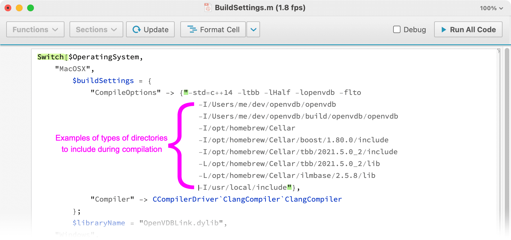
Once these are set, reload and then recompile. Here the input True is optional and tells the system to print the compile command as well as any warnings or errors during compile:
<< OpenVDBLink`
OpenVDBLink`Developer`Recompile[True]"/usr/bin/clang -dynamiclib -o \"/Users/ghurst/openvdb/openvdb_wolfram/OpenVDBLink/LibraryResources/MacOSX-x86-64/Working-2995MAC-GHURST-2-36758-366333440-1/OpenVDBLink.dylib\" -arch x86_64 -mmacosx-version-min=10.14 -install_name @rpath/OpenVDBLink.dylib -fPIC -O2 -std=c++11 -std=c++14 -ltbb -lHalf -lopenvdb -flto -I\"/Applications/Mathematica.app/Contents/SystemFiles/IncludeFiles/C\" -I\"/Applications/Mathematica.app/Contents/SystemFiles/Links/MathLink/DeveloperKit/MacOSX-x86-64/CompilerAdditions\" -I\"/Users/ghurst/openvdb/openvdb_wolfram/OpenVDBLink/LTemplate/IncludeFiles\" \"/Users/ghurst/openvdb/openvdb_wolfram/OpenVDBLink/Source/ExplicitGrids/LTemplate-OpenVDBLink.cpp\" -F\"/Applications/Mathematica.app/Contents/SystemFiles/Links/MathLink/DeveloperKit/MacOSX-x86-64/CompilerAdditions\" -L\"/Applications/Mathematica.app/Contents/SystemFiles/Libraries/MacOSX-x86-64\" -framework \"mathlink\" -lc++ -framework Foundation 2>&1"
Length[Names["OpenVDBLink`*"]]72
?? OpenVDBLink`*Create a float grid with voxel size 1.0:
grid = OpenVDBCreateGrid[1.0]
OpenVDBCreateGrid returns an empty grid:
OpenVDBProperty[grid, "Empty"]True
Short hand syntax:
grid["Empty"]True
Set values at index coordinates {0, 0, 0} and
{1, 0, 0}:
OpenVDBSetValues[grid, {{0, 0, 0}, {1, 0, 0}}, {0.5, 0.75}];The grid is no longer empty:
grid["Empty"]False
List of supported grid types:
OpenVDBGridTypes[]{"Scalar", "Vector", "Double", "Float", "Byte", "Int32", "Int64", "UInt32", "Vec2D", "Vec2I", "Vec2S", "Vec3D", "Vec3I", "Vec3S", "Boolean", "Mask"}
Here, "Scalar" is a synonym for "Float" and
"Vector" is a synonym for "Vec3S" (3D scalar
(float) valued vector).
Create a grid with voxel size 1.0 for each type:
grids = Association[Table[type -> OpenVDBCreateGrid[1.0, type], {type, OpenVDBGridTypes[][[3 ;; -1]]}]]Retrieve their default background values:
#["BackgroundValue"] & /@ grids<|"Double" -> 0., "Float" -> 0., "Byte" -> 0, "Int32" -> 0, "Int64" -> 0, "UInt32" -> 0, "Vec2D" -> {0., 0.}, "Vec2I" -> {0, 0}, "Vec2S" -> {0., 0.}, "Vec3D" -> {0., 0., 0.}, "Vec3I" -> {0, 0, 0}, "Vec3S" -> {0., 0., 0.}, "Boolean" -> 0, "Mask" -> Missing["NotApplicable"]|>
Create a level set from a mesh, with voxel size 0.05 and narrow band half width 3.0:
mesh = ExampleData[{"Geometry3D", "Triceratops"}, "MeshRegion"]dinovdb = OpenVDBLevelSet[mesh, 0.05, 3.0]
Alternatively, first apply the voxel size and half width as global settings. These values will not need to be passed in explicitly anymore, unless different values are desired:
$OpenVDBSpacing = 0.05;
$OpenVDBHalfWidth = 3.0;dinovdb = OpenVDBLevelSet[mesh]
Retrieve properties about the grid:
dinovdb["PropertyValueGrid"]Drill a hole in the grid and apply 8 applications of a mean filter with window 2:
OpenVDBDifferenceFrom[dinovdb, Cylinder[{{0, -2, 0.5}, {0, 2, 0.5}}, 0.5]];OpenVDBFilter[dinovdb, {"Mean", 2}, 8];Since $OpenVDBSpacing and $OpenVDBHalfWidth
have been set, the cylinder in the line above was automatically
converted to a level set under the hood.
Render the object:
OpenVDBLevelSetRender[dinovdb]Create a level set representation of a unit ball with voxel size 0.1:
ball = OpenVDBLevelSet[Ball[], 0.1, 2.0]
Create a fog volume:
fog = OpenVDBFogVolume[ball]Retrieve the data as an Image3D object:
im3d = OpenVDBImage3D[fog]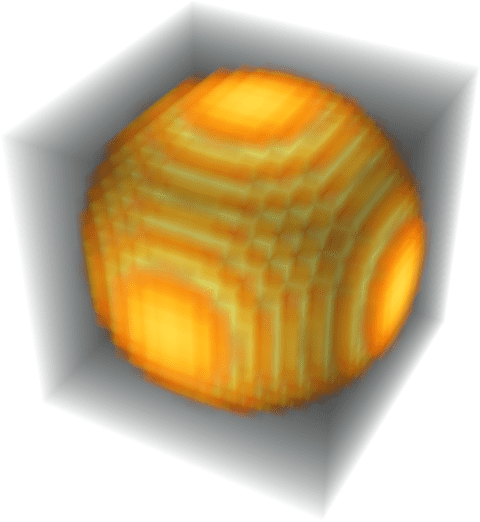
Examine the slices:
Image3DSlices[im3d]Image3DSlices[im3d, 10]Import a grid from a URL:
grid = OpenVDBImport["https://artifacts.aswf.io/io/aswf/openvdb/models/bunny.vdb/1.0.0/bunny.vdb-1.0.0.zip"]Convert it to a mesh:
mesh = OpenVDBMesh[grid];MeshCellCount[mesh]{1339734, 4019196, 2679464}
Retrieve a smaller mesh:
mesh2 = OpenVDBMesh[grid, "Adaptivity" -> 1]MeshCellCount[mesh2]{22585, 67749, 45166}
?$OpenVDBSpacingIn a fresh kernel, $OpenVDBSpacing has no value:
$OpenVDBSpacing$OpenVDBSpacing
When $OpenVDBSpacing has no value, operations that need
an explicit voxel size must have it passed in:
OpenVDBCreateGrid[]$Failed
Create a grid with voxel size 0.1:
OpenVDBCreateGrid[0.1]
Set $OpenVDBSpacing to 0.1. Now every grid that’s
created without being provided a voxel size will use 0.1:
$OpenVDBSpacing = 0.1;grid = OpenVDBCreateGrid[];grid["VoxelSize"]0.1
Create a level set representation of a unit ball and render it, using
the settings for $OpenVDBSpacing and
$OpenVDBHalfWidth:
$OpenVDBSpacing = 0.1;
$OpenVDBHalfWidth = 3.0;OpenVDBLevelSetRender[OpenVDBLevelSet[Ball[]]]When both $OpenVDBSpacing and
$OpenVDBHalfWidth are set, operations that require level
set inputs will automatically convert valid regions into a level set
using the global settings for voxel size and half width.
Passing in a region to an OpenVDBLink function automatically converts it into a level set under the hood.
$OpenVDBSpacing = 0.1;
$OpenVDBHalfWidth = 3.0;OpenVDBLevelSetRender[Ball[]]Clear $OpenVDBSpacing using Unset
(=.):
$OpenVDBSpacing =.It no longer has a value:
$OpenVDBSpacing$OpenVDBSpacing
?$OpenVDBHalfWidthIn a fresh kernel, $OpenVDBHalfWidth has value 3.0:
$OpenVDBHalfWidth3.
When $OpenVDBHalfWidth has a value, the
OpenVDBLevelSet constructor will assume its value:
grid = OpenVDBLevelSet[Ball[], 0.1];
grid["HalfWidth"]3.
Change its value:
$OpenVDBHalfWidth = 4.0;grid = OpenVDBLevelSet[Ball[], 0.1];
grid["HalfWidth"]4.
An explicitly passed in a half width takes precedence over
$OpenVDBHalfWidth:
grid = OpenVDBLevelSet[Ball[], 0.1, 2.0];
grid["HalfWidth"]2.
Create a level set representation of a unit ball and render it, using
the settings for $OpenVDBSpacing and
$OpenVDBHalfWidth:
$OpenVDBSpacing = 0.1;
$OpenVDBHalfWidth = 3.0;OpenVDBLevelSetRender[OpenVDBLevelSet[Ball[]]]When both $OpenVDBSpacing and
$OpenVDBHalfWidth are set, operations that require level
set inputs will automatically convert valid regions into a level set
using the global settings for voxel size and half width.
Passing in a region to an OpenVDBLink function automatically converts it into a level set under the hood.
$OpenVDBSpacing = 0.1;
$OpenVDBHalfWidth = 3.0;OpenVDBLevelSetRender[Ball[]]Clear $OpenVDBHalfWidth using Unset
(=.):
$OpenVDBHalfWidth =.It no longer has a value:
$OpenVDBHalfWidth$OpenVDBHalfWidth
?$OpenVDBCreatorIn a fresh kernel, $OpenVDBCreator has value None:
$OpenVDBCreatorNone
When $OpenVDBCreator has no value, operations that
create grids will not set a creator:
grid = OpenVDBCreateGrid[1.0];grid["Creator"]Missing["NotAvailable"]
Create a grid with a creator:
grid = OpenVDBCreateGrid[1.0, "Creator" -> "OpenVDBLink_Docs"];grid["Creator"]"OpenVDBLink_Docs"
Set $OpenVDBCreator. Now every grid that’s created
without being provided a voxel size will use 0.1:
$OpenVDBCreator = "OpenVDBLink_Docs";grid = OpenVDBCreateGrid[1.0];grid["Creator"]"OpenVDBLink_Docs"
?OpenVDBDefaultSpaceConsider a level set representation of a unit ball centered at the origin with voxel size 0.1:
ball = OpenVDBLevelSet[Ball[], 0.1];The point {2, 0, 0} (in world space) is distance 1 from
the ball, since the closest point on its boundary is
{1, 0, 0}:
SignedRegionDistance[Ball[], {2, 0, 0}]1
OpenVDBSignedDistance returns a similar result since the
input point is assumed to be in world space by default:
OpenVDBSignedDistance[ball, {2, 0, 0}]1.00751
We can determine that OpenVDBSignedDistance takes
coordinates in world space by querying
OpenVDBDefaultSpace:
OpenVDBDefaultSpace[OpenVDBSignedDistance]"World"
On the other hand, we might want to know the signed distance of the
coordinate 2 voxels from the origin, e.g. {2, 0, 0} in
index space.
Query OpenVDBSignedDistance with a point in index
space:
OpenVDBSignedDistance[ball, {2, 0, 0} -> "Index"]-0.798116
In this example, the index coordinate {2, 0, 0} is
equivalent to the world coordinate {0.2, 0, 0} since the
voxel size is 0.1:
{
OpenVDBSignedDistance[ball, {0.2, 0, 0}],
OpenVDBSignedDistance[ball, {0.2, 0, 0} -> "World"],
OpenVDBSignedDistance[ball, {2, 0, 0} -> "Index"]
}{-0.798116, -0.798116, -0.798116}
The world coordinate {2, 0, 0} is equivalent to the
index coordinate {20, 0, 0} since the voxel size is
0.1:
{
OpenVDBSignedDistance[ball, {2, 0, 0}],
OpenVDBSignedDistance[ball, {2, 0, 0} -> "World"],
OpenVDBSignedDistance[ball, {20, 0, 0} -> "Index"]
}{1.00751, 1.00751, 1.00751}
Gather functions based on their default space:
spacedata = PositionIndex[Association[# -> OpenVDBDefaultSpace[ToExpression[#]] & /@ Names["OpenVDBLink`*"]]];Gather all functions that, by default, work in index space:
spacedata["Index"] // MulticolumnGather all functions that, by default, work in world space:
spacedata["World"] // Multicolumn?OpenVDBCreateGrid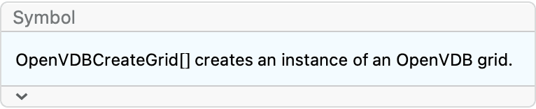
Create a float grid with voxel size 1.0:
grid = OpenVDBCreateGrid[1.0]
OpenVDBCreateGrid creates an empty grid:
grid["Empty"]True
Create a vector grid:
OpenVDBCreateGrid[1.0, "Vector"]For each available grid type, create an empty grid with voxel size 0.5:
types = OpenVDBGridTypes[][[3 ;; -1]]{"Double", "Float", "Byte", "Int32", "Int64", "UInt32", "Vec2D", "Vec2I", "Vec2S", "Vec3D", "Vec3I", "Vec3S", "Boolean", "Mask"}
grids = OpenVDBCreateGrid[1.0, #] & /@ typesNo arguments are necessary if $OpenVDBSpacing is
set:
$OpenVDBSpacing = 0.1;grid = OpenVDBCreateGrid[]grid["VoxelSize"]0.1
Create a Boolean grid and manually set values:
bgrid = OpenVDBCreateGrid[1.0, "Boolean"]
OpenVDBSetValues[bgrid, Position[DiskMatrix[10 {1, 1, 1}], 1], 1];OpenVDBImage3D[bgrid]?OpenVDBClearGridCreate a float grid with voxel size 1.0:
grid = OpenVDBCreateGrid[1.0]
Set 40 values along the positive x axis:
OpenVDBSetValues[grid, Table[{i, 0, 0}, {i, 40}], 0.5];The grid now contains 40 active voxels:
grid["ActiveVoxelCount"]40
Clear the grid:
OpenVDBClearGrid[grid];No active voxels:
grid["ActiveVoxelCount"]0
?OpenVDBCopyGridCreate a level set cube with voxel size 0.05:
cube = OpenVDBLevelSet[Cube[], 0.05];Create a copy:
copy = OpenVDBCopyGrid[cube];Apply a smoothing filter on the copy:
OpenVDBFilter[copy, "Gaussian"];The original grid remains unchanged while the copy is smoothed:
OpenVDBMesh /@ {cube, copy}?OpenVDBGridTypesList out all available types:
OpenVDBGridTypes[]{"Scalar", "Vector", "Double", "Float", "Byte", "Int32", "Int64", "UInt32", "Vec2D", "Vec2I", "Vec2S", "Vec3D", "Vec3I", "Vec3S", "Boolean", "Mask"}
"Scalar" is a synonym for "Float":
OpenVDBCreateGrid[1.0, "Scalar"] // FullForm"Vector" is a synonym for "Vec3S":
OpenVDBCreateGrid[1.0, "Vector"] // FullForm"D" stands for double, "I" stands for
integer, and "S" stands for scalar i.e. float:
v3dtypes = {"Vec3D", "Vec3I", "Vec3S"};Initialize grids and set the value {0.1, 0.5, 1.7} at
the origin:
veccgrids = OpenVDBCreateGrid[1.0, #] & /@ v3dtypesScan[OpenVDBSetValues[#, {0, 0, 0}, {0.1, 0.5, 1.7}] &, veccgrids]Inspect each value at the origin. "S" (float) is not as
accurate as "D" (double). "I" (integer)
truncates values:
MapThread[#1 -> InputForm[OpenVDBValues[#2, {0, 0, 0}]] &, {v3dtypes, veccgrids}] // Column?OpenVDBGridsInitialize various grids with voxel size 1.0:
grids = Table[OpenVDBCreateGrid[1.0, type], {type, {"Float", "Byte", "Vec3S", "Boolean", "Mask"}}]List out all grids:
OpenVDBGrids[]Query just a specific grid type:
OpenVDBGrids["Float"]In this kernel session there are no double grids in memory:
OpenVDBGrids["Double"]{}
Use the input All to return an Association
containing types with no grids too:
OpenVDBGrids[All]Create more float grids:
grids2 = Table[OpenVDBCreateGrid[1.0, "Float"], 3]These float grids are now present, as shown in their expression IDs in the information menus:
OpenVDBGrids["Float"]?OpenVDBGridQCreate a grid:
grid = OpenVDBCreateGrid[1.0]
Verify that it represents a valid grid:
OpenVDBGridQ[grid]True
Inspect the FullForm of a grid:
OpenVDBCreateGrid[1.0] // FullFormThe internal ID must represent an active managed library expression:
OpenVDBGridQ[OpenVDBGrid[10^100, "Float"]]False
Create a grid and print its FullForm:
With[{grid = OpenVDBCreateGrid[1.0]},
Print[FullForm[grid]];
OpenVDBGridQ[grid]
]True
Once the grid is no longer referenced by the system, it’s destroyed:
False
OpenVDBGrid does not format if it does not represent a
valid grid:
OpenVDBGrid[74, "Float"]
?OpenVDBScalarGridQCreate a scalar grid:
grid = OpenVDBCreateGrid[1.0]
Verify that it represents a valid scalar grid:
OpenVDBScalarGridQ[grid]True
Find the list of valid grid types:
types = OpenVDBGridTypes[][[3 ;; -1]]{"Double", "Float", "Byte", "Int32", "Int64", "UInt32", "Vec2D", "Vec2I", "Vec2S", "Vec3D", "Vec3I", "Vec3S", "Boolean", "Mask"}
For each grid type, test if it represents a scalar grid or not:
TextGrid[Table[{t, OpenVDBScalarGridQ[OpenVDBCreateGrid[1.0, t]]}, {t,types}], Frame -> All]?OpenVDBIntegerGridQCreate an integer grid:
grid = OpenVDBCreateGrid[1.0, "Int32"]Verify that it represents a valid integer grid:
OpenVDBIntegerGridQ[grid]True
Find the list of valid grid types:
types = OpenVDBGridTypes[][[3 ;; -1]]{"Double", "Float", "Byte", "Int32", "Int64", "UInt32", "Vec2D", "Vec2I", "Vec2S", "Vec3D", "Vec3I", "Vec3S", "Boolean", "Mask"}
For each grid type, test if it represents an integer grid or not:
TextGrid[Table[{t, OpenVDBIntegerGridQ[OpenVDBCreateGrid[1.0, t]]}, {t, types}], Frame -> All]?OpenVDBVectorGridQCreate a vector grid:
grid = OpenVDBCreateGrid[1.0, "Vector"]
Verify that it represents a valid vector grid:
OpenVDBVectorGridQ[grid]True
Find the list of valid grid types:
types = OpenVDBGridTypes[][[3 ;; -1]]{"Double", "Float", "Byte", "Int32", "Int64", "UInt32", "Vec2D", "Vec2I", "Vec2S", "Vec3D", "Vec3I", "Vec3S", "Boolean", "Mask"}
For each grid type, test if it represents a vector grid or not:
TextGrid[Table[{t, OpenVDBVectorGridQ[OpenVDBCreateGrid[1.0, t]]}, {t,types}], Frame -> All]?OpenVDBBooleanGridQCreate a Boolean grid:
grid = OpenVDBCreateGrid[1.0, "Boolean"]Verify that it represents a valid Boolean grid:
OpenVDBBooleanGridQ[grid]True
Find the list of valid grid types:
types = OpenVDBGridTypes[][[3 ;; -1]]{"Double", "Float", "Byte", "Int32", "Int64", "UInt32", "Vec2D", "Vec2I", "Vec2S", "Vec3D", "Vec3I", "Vec3S", "Boolean", "Mask"}
For each grid type, test if it represents a Boolean grid or not:
TextGrid[Table[{t, OpenVDBBooleanGridQ[OpenVDBCreateGrid[1.0, t]]}, {t, types}], Frame -> All]?OpenVDBMaskGridQCreate a mask grid:
grid = OpenVDBCreateGrid[1.0, "Mask"]
Verify that it represents a valid mask grid:
OpenVDBMaskGridQ[grid]True
Find the list of valid grid types:
types = OpenVDBGridTypes[][[3 ;; -1]]{"Double", "Float", "Byte", "Int32", "Int64", "UInt32", "Vec2D", "Vec2I", "Vec2S", "Vec3D", "Vec3I", "Vec3S", "Boolean", "Mask"}
For each grid type, test if it represents a mask grid or not:
TextGrid[Table[{t, OpenVDBMaskGridQ[OpenVDBCreateGrid[1.0, t]]}, {t, types}], Frame -> All]?OpenVDBPropertyThe following examples will use this level set grid as the base input:
grid = OpenVDBLevelSet[Ball[], 0.125];Retrieve a property:
OpenVDBProperty[grid, "VoxelSize"]0.125
OpenVDBGrid[…][prop] is shorthand for
OpenVDBProperty[OpenVDBGrid[…], prop]:
grid["VoxelSize"]0.125
Retrieve a list of all properties available for the grid:
grid["Properties"]{"ActiveLeafVoxelCount", "ActiveTileCount", "ActiveVoxelCount", "BackgroundValue", "BoundingGridVoxelCount", "CreationDate", "Creator", "Description", "Empty", "ExpressionID", "GammaAdjustment", "GrayscaleWidth", "GridClass", "GridType", "HalfWidth", "IndexBoundingBox", "IndexDimensions", "LastModifiedDate", "MaxValue", "MemoryUsage", "MinValue", "MinMaxValues", "Name", "Properties", "PropertyValueGrid", "UniformVoxels", "VoxelSize", "WorldBoundingBox", "WorldDimensions"}
Multiple properties at once:
propertylist = {"ActiveLeafVoxelCount", "BackgroundValue", "BoundingGridVoxelCount", "VoxelSize"};grid[propertylist]{4982, 0.375, 9261, 0.125}
Key value pairs of properties in an Association:
OpenVDBProperty[grid, propertylist, "Association"]<|"ActiveLeafVoxelCount" -> 4982, "BackgroundValue" -> 0.375, "BoundingGridVoxelCount" -> 9261, "VoxelSize" -> 0.125|>
Dataset of properties:
OpenVDBProperty[grid, propertylist, "Dataset"]Rule list of properties:
OpenVDBProperty[grid, propertylist, "RuleList"]{"ActiveLeafVoxelCount" -> 4982, "BackgroundValue" -> 0.375, "BoundingGridVoxelCount" -> 9261, "VoxelSize" -> 0.125}
View all properties at once in a grid. Any user controlled property that has not been set is indicated as such:
grid["PropertyValueGrid"]Not all properties apply to every grid type:
bgrid = OpenVDBCreateGrid[1.0, "Boolean"]
bgrid["HalfWidth"]Missing["NotApplicable"]
?OpenVDBSetPropertyThe following examples will use this level set grid as the base input:
grid = OpenVDBLevelSet[Ball[], 0.125];The list of properties OpenVDBSetProperty can
control:
{"BackgroundValue", "Creator", "Description", "GridClass", "Name", "VoxelSize"}Set the creator of the grid:
OpenVDBSetProperty[grid, "Creator", "OpenVDBLink_Docs"]"OpenVDBLink_Docs"
Verify it’s been set:
OpenVDBProperty[grid, "Creator"]"OpenVDBLink_Docs"
Or equivalently:
grid["Creator"]"OpenVDBLink_Docs"
Set multiple properties at once:
OpenVDBSetProperty[grid, {"Description", "Name"}, {"This is a ball grid", "ball"}]{"This is a ball grid", "ball"}
Verify they’ve been set:
OpenVDBProperty[grid, {"Creator", "Description", "Name"}, "Association"]<|"Creator" -> "OpenVDBLink_Docs", "Description" -> "This is a ball grid", "Name" -> "ball"|>
Create an empty scalar grid with voxel size 1.0:
sgrid = OpenVDBCreateGrid[1.0, "Float"]
Set the background value, mark it as a level set, and change the voxel size to 0.1:
OpenVDBSetProperty[sgrid, {"BackgroundValue", "GridClass", "VoxelSize"}, {0.3, "LevelSet", 0.1}]{0.3, "LevelSet", 0.1}
Verify:
sgrid[{"BackgroundValue", "GridClass", "VoxelSize"}]{0.3, "LevelSet", 0.1}
Possible settings for "GridClass" include
"LevelSet", "FogVolume", and
None:
sgrid = OpenVDBCreateGrid[1.0, "Float"]
Various settings of "GridClass":
OpenVDBSetProperty[sgrid, "GridClass", "LevelSet"]"LevelSet"
OpenVDBSetProperty[sgrid, "GridClass", "FogVolume"]"FogVolume"
OpenVDBSetProperty[sgrid, "GridClass", None]None
OpenVDBSetProperty[expr, prop -> val] is alternative
syntax:
OpenVDBSetProperty[grid, "Creator" -> "OpenVDBLink_Docs"]"OpenVDBLink_Docs"
OpenVDBSetProperty[grid, {"Description", "Name"} -> {"This is a ball grid", "ball"}]{"This is a ball grid", "ball"}
OpenVDBSetProperty[expr,————{->,————->}] is alternative syntax:
OpenVDBSetProperty[grid, {"Creator" -> "OpenVDBLink_Docs", "Name" -> "ball"}]{"OpenVDBLink_Docs", "ball"}
?OpenVDBLevelSetCreate a level set representation of a unit ball, with voxel size 0.1 and half width 3.0:
ball = OpenVDBLevelSet[Ball[], 0.1, 3.0]
Inspect its properties:
ball["PropertyValueGrid"]The third argument may be omitted when $OpenVDBHalfWidth
is set:
$OpenVDBHalfWidth = 3.0;ball = OpenVDBLevelSet[Ball[], 0.1]
ball["ActiveLeafVoxelCount"]7674
The second argument may be omitted when $OpenVDBSpacing
is set:
$OpenVDBSpacing = 0.1;ball = OpenVDBLevelSet[Ball[]]
ball["ActiveLeafVoxelCount"]7674
Set the creator and name during construction:
ball = OpenVDBLevelSet[Ball[], 0.1, 3.0, "Creator" -> "OpenVDBLink_Docs", "Name" -> "ball"]Set its description too:
OpenVDBSetProperty[ball, "Description" -> "This is a level set representation of a ball and it's wonderful."];Inspect its properties:
ball["PropertyValueGrid"]The first argument must be a region that is
ConstantRegionQ and has
RegionEmbeddingDimension equal to 3:
OpenVDBLevelSet[Disk[]]$Failed
OpenVDBLevelSet[Ball[{x, y, z}, r]]$Failed
The following examples will assume these settings:
$OpenVDBSpacing = 0.1;
$OpenVDBHalfWidth = 3.0;Create a level set representation of any bounded and constant 3D basic region.
Examples include:
Ball:
OpenVDBLevelSet[Ball[]]
CapsuleShape:
OpenVDBLevelSet[CapsuleShape[{{0, 0, 0}, {1, 0, 0}}, 0.2]]
Dodecahedron:
OpenVDBLevelSet[Dodecahedron[]]
Ellipsoid:
OpenVDBLevelSet[Ellipsoid[{0.5, 1, 0}, {3, 2, 1}]]
Cylinder:
OpenVDBLevelSet[Cylinder[{{-2, -1, 0}, {0, 0, 0}}]]
Parallelepiped:
OpenVDBLevelSet[Parallelepiped[]]
Torus:
OpenVDBLevelSet[Torus[]]
The following examples will assume these settings:
$OpenVDBSpacing = 0.1;
$OpenVDBHalfWidth = 3.0;Create a level set representation of any 3D mesh region of dimension 2 or higher.
Examples include:
A closed surface MeshRegion:
OpenVDBLevelSet[ExampleData[{"Geometry3D", "Triceratops"}, "MeshRegion"]]
BoundaryMeshRegion:
OpenVDBLevelSet[ExampleData[{"Geometry3D", "Triceratops"}, "BoundaryMeshRegion"]]
A full dimensional MeshRegion with
Tetrahedron elements:
mesh = DiscretizeRegion[Ball[]];MeshCells[mesh, 3] // ShortOpenVDBLevelSet[mesh]
For mixed dimension MeshRegion, low dimension components
are ignored:
mesh = MeshRegion[
{{0, 0, 0}, {1, 0, 0}, {2, 0, 0}, {3, 0, -1/2}, {3, 0, 1/2}, {4, -1/2, 0}, {4, 1/2, 0}},
{Point[1], Line[{2, 3}], Triangle[{3, 4, 5}], Tetrahedron[{4, 6, 5, 7}]}
];grid = OpenVDBLevelSet[mesh, 0.01]
Compare:
{mesh, OpenVDBMesh[grid]}The following examples will assume these settings:
$OpenVDBSpacing = 0.1;
$OpenVDBHalfWidth = 3.0;Create a level set representation of any 3D full dimensional formula region.
Examples include:
ImplicitRegion:
OpenVDBLevelSet[ImplicitRegion[x^2 + y^2 + z^2 <= 1, {x, y, z}]]
ParametricRegion:
OpenVDBLevelSet[ParametricRegion[{{x, y, z + y*x}, x^2 + y^2 + z^2 <= 1}, {x, y, z}]]Lower dimensional components are ignored:
reg = ImplicitRegion[(x^2 + (9/4) y^2 + z^2 - 1)^3 - x^2 z^3 - (9/80) y^2 z^3 < 0 || (x^2 + y^2 == 2 && z == 0), {x, y, z}];grid = OpenVDBLevelSet[reg, 0.05]
Compare:
{DiscretizeRegion[reg], OpenVDBMesh[grid]}The following examples will assume these settings:
$OpenVDBSpacing = 0.1;
$OpenVDBHalfWidth = 3.0;Create a level set representation of any 3D full dimensional formula region.
Examples include:
BooleanRegion:
OpenVDBLevelSet[RegionUnion[Ball[], Cuboid[]]]
TransformedRegion:
OpenVDBLevelSet[TransformedRegion[CapsuleShape[], ShearingTransform[30 \[Degree], {1, 0, 0}, {0, 1, 1}]]]
?OpenVDBFogVolumeCreate a level set ball with voxel size 0.1 and half width 2.0:
ball = OpenVDBLevelSet[Ball[], 0.1, 2.0]
Create a fog volume:
fog = OpenVDBFogVolume[ball]
Examine its slices:
OpenVDBImage3D[fog] // Image3DSlices
The grayscale band is roughly 2 voxels wide, which is the half width of the original level set:
Image[OpenVDBSliceImage[fog, 0], ImageSize -> 240]OpenVDBFogVolume creates a new grid:
ball = OpenVDBLevelSet[Ball[], 0.1, 2.0];fog = OpenVDBFogVolume[ball];The original grid still represents a level set:
{ball["GridClass"], fog["GridClass"]}{"LevelSet", "FogVolume"}
?OpenVDBToFogVolumeCreate a level set ball with voxel size 0.1 and half width 2.0:
ball = OpenVDBLevelSet[Ball[], 0.1, 2.0]
Convert to a fog volume:
OpenVDBToFogVolume[ball]
Examine its slices:
OpenVDBImage3D[ball] // Image3DSlices
The grayscale band is roughly 2 voxels wide, which is the half width of the original level set:
Image[OpenVDBSliceImage[ball, 0], ImageSize -> 240]OpenVDBToFogVolume modifies the input data:
ball = OpenVDBLevelSet[Ball[], 0.1, 2.0];OpenVDBToFogVolume[ball];The original grid now represents a fog volume:
ball["GridClass"]"FogVolume"
?OpenVDBMeshThe following examples will use this level set grid as the base input:
grid = OpenVDBDifference[
OpenVDBLevelSet[Ball[], 0.2],
OpenVDBLevelSet[Cylinder[{{0, -2, 0}, {0, 2, 0}}, .5], 0.2]
];OpenVDBFilter[grid, "Laplacian", 3];Retrieve the object as a mesh:
mesh = OpenVDBMesh[grid]
This object is a surface MeshRegion and represents the
2D boundary:
mesh // HeadMeshRegion
Area[mesh]10.5685
Volume[mesh]Undefined
Retrieve the object as a BoundaryMeshRegion:
mesh = OpenVDBMesh[grid, "BoundaryMeshRegion"]Volume[mesh]1.71397
Retrieve the mesh of a fog volume:
OpenVDBMesh[OpenVDBFogVolume[grid]]Retrieve the complex data of the mesh. The return value is of the
form {coords, cells}:
Short /@ OpenVDBMesh[grid, "ComplexData"]
Retrieve the faces of the mesh:
faces = OpenVDBMesh[grid, "FaceData"];Examine the vertices of the first 4 triangles:
faces[[1, 1 ;; 4]]{{{-0.807618, -0.410372, -0.225385}, {-0.815691, -0.420792, -0.1}, {-0.871229, -0.3, -0.1}}, {{-0.833507, -0.302248, -0.295231}, {-0.807618, -0.410372, -0.225385}, {-0.871229, -0.3, -0.1}}, {{-0.814471, -0.237081, -0.42533}, {-0.833507, -0.302248, -0.295231}, {-0.884373, -0.1, -0.3}}, {{-0.827692, -0.1, -0.448292}, {-0.814471, -0.237081, -0.42533}, {-0.884373, -0.1, -0.3}}}
The first 20 triangles form a surface patch:
Graphics3D[Triangle[faces[[1, 1 ;; 20]]]]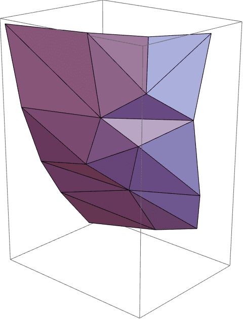
Retrieve a piece of the mesh over specified bounds:
OpenVDBMesh[grid, Automatic, {{-0.8, 0}, {-1, 1}, {-1, 0}}]By default OpenVDBMesh works in world coordinates:
OpenVDBDefaultSpace[OpenVDBMesh]"World"
Pass in the bounds in index space:
OpenVDBMesh[grid, Automatic, {{-4, 0}, {-5, 5}, {-5, 0}} -> "Index"]
OpenVDBMesh has the following options:
Options[OpenVDBMesh]{"Adaptivity" -> 0., "CloseBoundary" -> True, "IsoValue" -> Automatic,"ReturnQuads" -> False}
Adaptively sample to reduce triangle count. Adaptivity can range from 0.0 (none) to 1.0:
{OpenVDBMesh[grid, "Adaptivity" -> 0.0], OpenVDBMesh[grid, "Adaptivity" -> 1.0]}Mesh over a different iso-band:
{OpenVDBMesh[grid], OpenVDBMesh[grid, "IsoValue" -> -0.1]}Return quads:
OpenVDBMesh[grid, Automatic, {{-0.8, 0}, {-1, 1}, {-1, 0}}, "ReturnQuads" -> True]With "Adaptivity" -> 0, the number of triangles can
be estimated without needing to compute the mesh:
MeshCellCount[OpenVDBMesh[grid], 2]752
Estimate the number of triangles:
3*OpenVDBArea[grid]/grid["VoxelSize"]^2763.455
?OpenVDBValues?OpenVDBSetValuesCreate an empty grid:
grid = OpenVDBCreateGrid[1.0, "Float"];Set the value at {0, 0, 0} to 0.5:
OpenVDBSetValues[grid, {0, 0, 0}, 0.5];Verify it’s been set:
OpenVDBValues[grid, {0, 0, 0}]0.5
Set multiple values at once:
grid = OpenVDBCreateGrid[1.0, "Float"];OpenVDBSetValues[grid, {{0, 0, 0}, {1, 1, 1}, {2, 2, 2}}, {0.5, π, 2}];Verify they’ve been set:
OpenVDBValues[grid, {{0, 0, 0}, {1, 1, 1}, {2, 2, 2}}]{0.5, 3.14159, 2.}
Assign multiple points to have the same value:
grid = OpenVDBCreateGrid[1.0, "Float"];OpenVDBSetValues[grid, {{0, 0, 0}, {1, 1, 1}, {2, 2, 2}}, 0.5];Verify they’ve been set:
OpenVDBValues[grid, {{0, 0, 0}, {1, 1, 1}, {2, 2, 2}}]{0.5, 0.5, 0.5}
By default OpenVDBValues and
OpenVDBSetValues work in index coordinates:
OpenVDBDefaultSpace[OpenVDBValues]"Index"
OpenVDBDefaultSpace[OpenVDBSetValues]"Index"
Pass in coordinates in world space:
grid = OpenVDBCreateGrid[1.0, "Float"];OpenVDBSetValues[grid, {{0, 0, 0}, {0.1, 0.1, 0.1}, {0.2, 0.2, 0.2}} -> "World", 0.5];Verify they’ve been set:
OpenVDBValues[grid, {{0, 0, 0}, {0.1, 0.1, 0.1}, {0.2, 0.2, 0.2}} -> "World"]{0.5, 0.5, 0.5}
OpenVDBValues and OpenVDBSetValues work
with any grid type except mask:
Boolean grid:
grid = OpenVDBCreateGrid[1.0, "Boolean"];
OpenVDBSetValues[grid, {0, 0, 0}, 1];
OpenVDBValues[grid, {0, 0, 0}]1
Integer grid:
grid = OpenVDBCreateGrid[1.0, "Int64"];
OpenVDBSetValues[grid, {0, 0, 0}, 17];
OpenVDBValues[grid, {0, 0, 0}]17
Vector grid:
grid = OpenVDBCreateGrid[1.0, "Vec2D"];
OpenVDBSetValues[grid, {0, 0, 0}, {1.2, 5.6}];
OpenVDBValues[grid, {0, 0, 0}]{1.2, 5.6}
Mask grid:
grid = OpenVDBCreateGrid[1.0, "Mask"];
OpenVDBSetValues[grid, {0, 0, 0}, 1];
OpenVDBValues[grid, {0, 0, 0}]$Failed
?OpenVDBStates?OpenVDBSetStatesCreate an empty grid:
grid = OpenVDBCreateGrid[1.0, "Float"];Mark {0, 0, 0} as an active voxel:
OpenVDBSetValues[grid, {0, 0, 0}, 1];Verify it’s been set to active:
OpenVDBStates[grid, {0, 0, 0}]1
Mark {0, 0, 0} back as inactive:
OpenVDBSetStates[grid, {0, 0, 0}, 0];Verify it’s now inactive:
OpenVDBStates[grid, {0, 0, 0}]0
Set multiple states at once:
grid = OpenVDBCreateGrid[1.0, "Float"];OpenVDBSetStates[grid, {{0, 0, 0}, {1, 1, 1}, {2, 2, 2}}, {1, 0, 1}];Verify they’ve been set appropriately:
OpenVDBStates[grid, {{0, 0, 0}, {1, 1, 1}, {2, 2, 2}}]{1, 0, 1}
Assign multiple points to have the same active state:
grid = OpenVDBCreateGrid[1.0, "Float"];OpenVDBSetStates[grid, {{0, 0, 0}, {1, 1, 1}, {2, 2, 2}}, 1];Verify they’ve been set appropriately:
OpenVDBStates[grid, {{0, 0, 0}, {1, 1, 1}, {2, 2, 2}}]{1, 1, 1}
By default OpenVDBStates and
OpenVDBSetStates work in index coordinates:
OpenVDBDefaultSpace[OpenVDBStates]"Index"
OpenVDBDefaultSpace[OpenVDBSetStates]"Index"
Pass in coordinates in world space:
grid = OpenVDBCreateGrid[1.0, "Float"];OpenVDBSetStates[grid, {{0, 0, 0}, {0.1, 0.1, 0.1}, {0.2, 0.2, 0.2}} -> "World", 1];Verify they’ve been set appropriately:
OpenVDBStates[grid, {{0, 0, 0}, {0.1, 0.1, 0.1}, {0.2, 0.2, 0.2}} -> "World"]{1, 1, 1}
OpenVDBStates and OpenVDBSetStates work
with any grid type:
Boolean grid:
grid = OpenVDBCreateGrid[1.0, "Boolean"];
OpenVDBSetStates[grid, {0, 0, 0}, 1];
OpenVDBStates[grid, {0, 0, 0}]1
Integer grid:
grid = OpenVDBCreateGrid[1.0, "Int64"];
OpenVDBSetStates[grid, {0, 0, 0}, 1];
OpenVDBStates[grid, {0, 0, 0}]1
Vector grid:
grid = OpenVDBCreateGrid[1.0, "Vec2D"];
OpenVDBSetStates[grid, {0, 0, 0}, 1];
OpenVDBStates[grid, {0, 0, 0}]1
Mask grid:
grid = OpenVDBCreateGrid[1.0, "Mask"];
OpenVDBSetStates[grid, {0, 0, 0}, 1];
OpenVDBStates[grid, {0, 0, 0}]1
?OpenVDBImport?OpenVDBExportThe following examples will use this file as a base input:
temploc = $TemporaryDirectory;Export a level set:
grid = OpenVDBLevelSet[ExampleData[{"Geometry3D", "Triceratops"}, "MeshRegion"], 0.01];file = FileNameJoin[{temploc, "tri.vdb"}];OpenVDBExport[file, grid]"/private/var/folders/bx/3hzyf2v96mv2xzm0yc02z87xgmf3zs/T/tri.vdb"
Verify it exported:
FileExistsQ[file]True
FileByteCount[file]11387892
Import the file:
grid2 = OpenVDBImport[file];OpenVDBScalarGridQ[grid2]True
Meta information is also exported:
grid = OpenVDBLevelSet[Ball[], 0.01, "Name" -> "ball"];file = FileNameJoin[{temploc, "ball.vdb"}];OpenVDBExport[file, grid]"/private/var/folders/bx/3hzyf2v96mv2xzm0yc02z87xgmf3zs/T/ball.vdb"
Import the grid by name:
grid2 = OpenVDBImport[file, "ball"];OpenVDBScalarGridQ[grid2]True
Import fails when there is no grid of a given name:
OpenVDBImport[file, "foo"]$Failed
Import a grid from a URL:
grid = OpenVDBImport["https://artifacts.aswf.io/io/aswf/openvdb/models/bunny.vdb/1.0.0/bunny.vdb-1.0.0.zip"];grid["PropertyValueGrid"]OpenVDBImport and OpenVDBExport work with
any supported grid type:
grid = OpenVDBCreateGrid[1.0, "Int64"];
OpenVDBSetValues[grid, {{0, 0, 0}, {1, 0, 0}, {1, 1, 0}, {0, 1, 0}}, {17, -9, 4, 1}];file = FileNameJoin[{temploc, "int_grid.vdb"}];OpenVDBExport[file, grid]"/private/var/folders/bx/3hzyf2v96mv2xzm0yc02z87xgmf3zs/T/int_grid.vdb"
Import it back:
grid2 = OpenVDBImport[file];Verify the values at z = 0 are set:
OpenVDBSlice[grid2, 0]{{1, 4}, {17, -9}}
By default, OpenVDBExport will not overwrite a file that
already exists:
grid = OpenVDBLevelSet[Ball[], 0.01];file = FileNameJoin[{temploc, "ball2.vdb"}];OpenVDBExport[file, grid]"/private/var/folders/bx/3hzyf2v96mv2xzm0yc02z87xgmf3zs/T/ball2.vdb"
Export again:
OpenVDBExport[file, grid]$Failed
Tell OpenVDBExport to overwrite the file:
OpenVDBExport[file, grid, OverwriteTarget -> True]"/private/var/folders/bx/3hzyf2v96mv2xzm0yc02z87xgmf3zs/T/ball2.vdb"
?OpenVDBLevelSetRenderThe following examples will use this level set grid as the base input:
grid = OpenVDBLevelSet[Torus[], 0.01];Render a level set using default Graphics3D view
options:
OpenVDBLevelSetRender[grid]Render the grid using a different color:
OpenVDBLevelSetRender[grid, Red]Render the grid using different base shaders:
baseshaders = {"Diffuse", "Matte", "Normal", "Position"};Row[Labeled[OpenVDBLevelSetRender[grid, #], Text[#]] & /@ baseshaders, Spacer[1], BaseStyle -> ImageSizeMultipliers -> 1]Render the grid using different materials:
materials = {"Aluminum", "Brass", "Bronze", "Copper", "Electrum", "Gold", "Iron", "Pewter", "Silver", "Clay", "Foil", "Glazed", "Plastic", "Rubber", "Satin"};Multicolumn[Labeled[OpenVDBLevelSetRender[grid, #], Text[#]] & /@ materials, Appearance -> "Horizontal", BaseStyle -> ImageSizeMultipliers -> 1, Spacings -> 2]Combine shaders and colors with second argument of the form
{shader, color}:
OpenVDBLevelSetRender[grid, {"Plastic", Orange}]Add different back-face coloring with second argument of the form {shader,,}:
OpenVDBLevelSetRender[grid, {"Plastic", Orange, Blue}, ViewRange -> {6.55, 100}]Add different closed-face coloring, used during clipping, with second argument of the form {shader,,,}:
OpenVDBLevelSetRender[grid, {"Plastic", Orange, Blue, Purple}, ViewRange -> {6.55, 100}, "ClosedClipping" -> True]Render the grid using named color themes:
themes = {"Default", "Monochrome", "Bronze", "Bold", "Cool", "Neon", "Pastel", "Soft", "Vibrant", "Warm"};Multicolumn[Labeled[OpenVDBLevelSetRender[grid, #, ViewRange -> {6.55, 100}], Text[#]] & /@ themes, Appearance -> "Horizontal", BaseStyle -> ImageSizeMultipliers -> 1, Spacings -> 2]Combine shaders and named color themes with second argument of the form
{shader, theme}:
OpenVDBLevelSetRender[grid, {"Glazed", "Warm"}]OpenVDBLevelSetRender shares the following options with
Graphics3D:
Intersection[Options[OpenVDBLevelSetRender], Options[Graphics3D], SameTest -> (#1[[1]] === #2[[1]] &)]{Background -> Automatic, ImageSize -> Automatic, ViewAngle -> Automatic, ViewCenter -> Automatic, ViewPoint -> {1.3, -2.4, 2.}, ViewProjection -> Automatic, ViewRange -> All, ViewVertical -> {0, 0, 1}}
These option values produce similar outputs compared to
Graphics3D:
Graphics3D[Torus[], Background -> GrayLevel[0.85], ViewPoint -> {1, 1, -3}, ViewVertical -> {0, 1, 0}, ViewCenter -> {0, 0.5, 0.5}, ViewAngle -> Pi/8]OpenVDBLevelSetRender[grid, Background -> GrayLevel[0.85], ViewPoint -> {1, 1, -3}, ViewVertical -> {0, 1, 0}, ViewCenter -> {0, 0.5, 0.5}, ViewAngle -> Pi/8]OpenVDBLevelSetRender only works with level sets:
OpenVDBLevelSetRender[OpenVDBFogVolume[grid]]$Failed
OpenVDBLevelSetRender[OpenVDBCreateGrid[1.0, "Byte"]]$Failed
?OpenVDBLevelSetViewer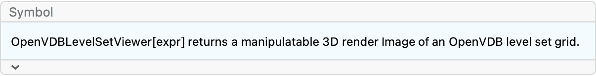
The following examples are static images of an interactive output. Reevaluate them to interact.
The following examples will use this level set grid as the base input:
grid = OpenVDBLevelSet[Torus[], 0.01];Interactively render a level set:
OpenVDBLevelSetViewer[grid]The following controls can interactively move, zoom, and rotate the object:
• 3D rotation: Mouse down near the center of a 3D graphic and drag to rotate it in 3D. The cursor indicates 3D rotation.
• 2D rotation: Mouse down near the edge of a 3D graphic and drag to rotate it in the plane of the screen. The cursor indicates 2D rotation.
• Pan: Press shift while dragging to pan. The cursor indicates panning.
• Zoom: Press cmd (on mac), ctrl (otherwise) while dragging to zoom. Drag upward to zoom in and downward to zoom out. The cursor indicates zoom.
• Dolly (V13.1+): Press cmd+shift (on mac), ctrl+shift (otherwise) while dragging to dolly. Drag upward to move into the screen and downward to move out of the screen. The cursor indicates dolly.
• Look around (V13.1+): Press cmd+option (on mac),
ctrl+option (otherwise) while dragging to look around while staying at a
fixed view point. The
 cursor indicates looking around.
cursor indicates looking around.
The Appearance tab lets you control settings like shading, resolution, iso‐value, and colors:
OpenVDBLevelSetViewer[grid]The shading setting lets you pick different base shaders and materials:
With closed clipping enabled, another color option becomes available:
The color swatches are controls that open up an interactive color picker:
The Orientation tab lets you choose preset view verticals and view points, as well as controls to move around the scene:
OpenVDBLevelSetViewer[grid]The Field of View tab lets you clip the object, zoom by changing the view angle, and choose the view projection:
OpenVDBLevelSetViewer[grid]The General tab lets you copy the current image or view settings and allows you to reset the view:
OpenVDBLevelSetViewer[grid]OpenVDBLevelSetViewer takes the same arguments as
OpenVDBLevelSetRender, which determines its initial
output:
OpenVDBLevelSetViewer[grid, {"Plastic", Orange}, Background -> Black, ViewPoint -> {0, 0, 10}, ViewAngle -> 0.11]OpenVDBLevelSetViewer only works with level sets:
OpenVDBLevelSetViewer[OpenVDBFogVolume[grid]]$Failed
OpenVDBLevelSetViewer[OpenVDBCreateGrid[1.0, "Byte"]]$Failed
?OpenVDBDataCreate a grid:
grid = OpenVDBLevelSet[Ball[], 0.1];Retrieve the voxel data as a dense 3-tensor:
data = OpenVDBData[grid];Check its dimensions:
data // Dimensions{25, 25, 25}
Look at a slice in the middle the data:
ListDensityPlot[data[[13]], InterpolationOrder -> 0, PlotLegends -> Automatic]Retrieve the voxel data over a bounding box:
grid = OpenVDBLevelSet[Ball[], 0.1];data = OpenVDBData[grid, {{0, 10}, {0, 10}, {0, 10}}];data // Dimensions{11, 11, 11}
Look at a slice in the middle the data:
ListDensityPlot[data[[6]], InterpolationOrder -> 0, PlotLegends -> Automatic]By default OpenVDBData works in index coordinates:
OpenVDBDefaultSpace[OpenVDBData]"Index"
Pass in the bounds in world space:
grid = OpenVDBLevelSet[Ball[], 0.1];data = OpenVDBData[grid, {{0.5, 0.9}, {0.5, 0.9}, {0, 1}} -> "World"];data // Dimensions{11, 5, 5}
ListDensityPlot[data[[6]], InterpolationOrder -> 0, PlotLegends -> Automatic]OpenVDBData works with any grid type except mask.
Boolean grid:
grid = OpenVDBCreateGrid[1.0, "Boolean"];
OpenVDBSetValues[grid, {0, 0, 0}, 1];OpenVDBData[grid, {{0, 1}, {0, 1}, {0, 1}}]{{{0, 0}, {0, 0}}, {{0, 0}, {1, 0}}}
Integer grid:
grid = OpenVDBCreateGrid[1.0, "Int32"];
OpenVDBSetValues[grid, {0, 0, 0}, 17];OpenVDBData[grid, {{0, 1}, {0, 1}, {0, 1}}]{{{0, 0}, {0, 0}}, {{0, 0}, {17, 0}}}
Vector grid:
grid = OpenVDBCreateGrid[1.0, "Vector"];
OpenVDBSetValues[grid, {0, 0, 0}, {1, 1, 1}];OpenVDBData[grid, {{0, 1}, {0, 1}, {0, 1}}]{{{{0., 0., 0.}, {0., 0., 0.}}, {{0., 0., 0.}, {0., 0., 0.}}}, {{{0., 0., 0.}, {0., 0., 0.}}, {{1., 1., 1.}, {0., 0., 0.}}}}
Mask grid:
OpenVDBData[OpenVDBCreateGrid[1.0, "Mask"], {{0, 1}, {0, 1}, {0, 1}}]$Failed
?OpenVDBSliceCreate a grid:
grid = OpenVDBLevelSet[Ball[], 0.1];Retrieve the voxel data at z = 0 as a dense matrix:
slice = OpenVDBSlice[grid, 0];Check its dimensions:
slice // Dimensions{25, 25}
Plot the slice:
ListDensityPlot[slice, InterpolationOrder -> 0, PlotLegends -> Automatic]Retrieve the voxel data at z = 0 over an xy bounding box:
grid = OpenVDBLevelSet[Ball[], 0.1];slice = OpenVDBSlice[grid, 0, {{0, 10}, {0, 10}}];slice // Dimensions{11, 11}
Plot the slice:
ListDensityPlot[slice, InterpolationOrder -> 0, PlotLegends -> Automatic]By default OpenVDBSlice works in index coordinates:
OpenVDBDefaultSpace[OpenVDBSlice]"Index"
Pass in the bounds in world space:
grid = OpenVDBLevelSet[Ball[], 0.1];slice = OpenVDBSlice[grid, 0 -> "World", {{0.5, 0.9}, {0.5, 0.9}}];slice // Dimensions{5, 5}
ListDensityPlot[slice, InterpolationOrder -> 0, PlotLegends -> Automatic]OpenVDBSlice works with any grid type except mask.
Boolean grid:
grid = OpenVDBCreateGrid[1.0, "Boolean"];
OpenVDBSetValues[grid, {0, 0, 0}, 1];OpenVDBSlice[grid, 0, {{0, 1}, {0, 1}}]{{0, 0}, {1, 0}}
Integer grid:
grid = OpenVDBCreateGrid[1.0, "Int32"];
OpenVDBSetValues[grid, {0, 0, 0}, 17];OpenVDBSlice[grid, 0, {{0, 1}, {0, 1}}]{{0, 0}, {17, 0}}
Vector grid:
grid = OpenVDBCreateGrid[1.0, "Vector"];
OpenVDBSetValues[grid, {0, 0, 0}, {1, 1, 1}];OpenVDBSlice[grid, 0, {{0, 1}, {0, 1}}]{{{0., 0., 0.}, {0., 0., 0.}}, {{1., 1., 1.}, {0., 0., 0.}}}
Mask grid:
OpenVDBSlice[OpenVDBCreateGrid[1.0, "Mask"], 0, {{0, 1}, {0, 1}}]$Failed
?OpenVDBActiveTilesCreate a fog volume:
fog = OpenVDBFogVolume[OpenVDBLevelSet[Ball[], 0.03]];Retrieve its tiles:
tiles = OpenVDBActiveTiles[fog];Tiles are given as a list of the form {{,},{,},…}:
tiles[[1 ;; 5]]{{{-24, -16, -8}, {-17, -9, -1}}, {{-24, -8, -16}, {-17, -1, -9}}, {{-24, -8, -8}, {-17, -1, -1}}, {{-16, -24, -8}, {-9, -17, -1}}, {{-16, -16, -16}, {-9, -9, -9}}}
View the tiles, offsetting the high corners by 1:
Graphics3D[Cuboid[#1, #2 + 1] & @@@ tiles]
Retrieve tiles over a bounding box:
fog = OpenVDBFogVolume[OpenVDBLevelSet[Ball[], 0.03]];Retrieve its tiles:
tiles = OpenVDBActiveTiles[fog, {{0, 10}, {0, 10}, {0, 10}}];tiles{{{0, 0, 0}, {7, 7, 7}}, {{0, 0, 8}, {7, 7, 15}}, {{0, 8, 0}, {7, 15, 7}}, {{0, 8, 8}, {7, 15, 15}}, {{8, 0, 0}, {15, 7, 7}}, {{8, 0, 8}, {15, 7, 15}}, {{8, 8, 0}, {15, 15, 7}}, {{8, 8, 8}, {15, 15, 15}}}
Only retrieve the tiles fully contained in the bounding box:
OpenVDBActiveTiles[fog, {{0, 10}, {0, 10}, {0, 10}}, "PartialOverlap" -> False]{{{0, 0, 0}, {7, 7, 7}}}
Retrieve tiles over a bounding box:
fog = OpenVDBFogVolume[OpenVDBLevelSet[Ball[], 0.03]];Retrieve its tiles:
tiles = OpenVDBActiveTiles[fog, {{0, 10}, {0, 10}, {0, 10}}];tiles{{{0, 0, 0}, {7, 7, 7}}, {{0, 0, 8}, {7, 7, 15}}, {{0, 8, 0}, {7, 15, 7}}, {{0, 8, 8}, {7, 15, 15}}, {{8, 0, 0}, {15, 7, 7}}, {{8, 0, 8}, {15, 7, 15}}, {{8, 8, 0}, {15, 15, 7}}, {{8, 8, 8}, {15, 15, 15}}}
Only retrieve the tiles fully contained in the bounding box:
OpenVDBActiveTiles[fog, {{0, 10}, {0, 10}, {0, 10}}, "PartialOverlap" -> False]{{{0, 0, 0}, {7, 7, 7}}}
By default OpenVDBActiveTiles works in index
coordinates:
OpenVDBDefaultSpace[OpenVDBActiveTiles]"Index"
Pass in the bounds in world space:
fog = OpenVDBFogVolume[OpenVDBLevelSet[Ball[], 0.03]];OpenVDBActiveTiles[fog, {{0, 0.3}, {0., 0.3}, {0., 0.3}} -> "World", "PartialOverlap" -> False]{{{0, 0, 0}, {7, 7, 7}}}
?OpenVDBActiveVoxelsRetrieve active voxels and their positions as a
SparseArray:
grid = OpenVDBLevelSet[Ball[], 0.2, 1.25];voxdata = OpenVDBActiveVoxels[grid]Plot the locations of the active values:
Graphics3D[Point[voxdata["NonzeroPositions"]]]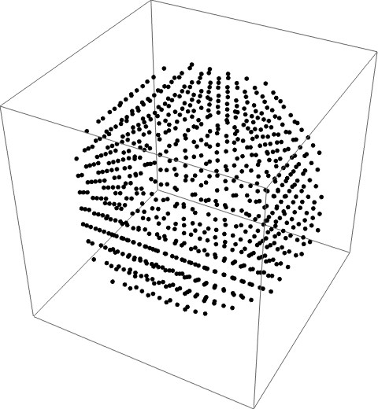
Examine a histogram of all active values. Since a ball has positive curvature, we expect more active voxels in the outer band (positive values):
Histogram[voxdata["NonzeroValues"]]Retrieve active voxels inside a bounding box:
grid = OpenVDBLevelSet[Ball[], 0.2, 1.25];OpenVDBActiveVoxels[grid, {{0, 10}, {0, 10}, {0, 10}}]By default OpenVDBActiveVoxels works in index
coordinates:
OpenVDBDefaultSpace[OpenVDBActiveVoxels]"Index"
Pass in the bounds in world space:
OpenVDBActiveVoxels[grid, {{0, .9}, {0, .4}, {0, 1.7}} -> "World"]Retrieve only the positions of active values:
grid = OpenVDBLevelSet[Ball[], 0.2, 1.25];OpenVDBActiveVoxels[grid, Automatic, "Positions"] // ShortRetrieve only the active values:
grid = OpenVDBLevelSet[Ball[], 0.2, 1.25];OpenVDBActiveVoxels[grid, Automatic, "Values"] // ShortThe default return type is SparseArray, except for
vector grids which returns a list of SparseArrays.
Initialize a vector grid with 4 active voxels:
grid = OpenVDBCreateGrid[1.0, "Vec2S"];OpenVDBSetValues[grid, {{0, 0, 0}, {1, 0, 0}, {1, 1, 0}, {0, 1, 0}}, {0.5, 0.75}];
OpenVDBSetStates[grid, {{0, 0, 0}, {1, 0, 0}, {1, 1, 0}, {0, 1, 0}}, 1];voxdata = OpenVDBActiveVoxels[grid]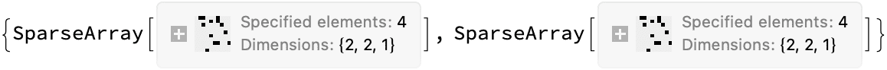
The first sparse array contains the first component of the active values:
voxdata[[1]]["NonzeroValues"]{0.5, 0.5, 0.5, 0.5}
The second sparse array contains the second component of the active values:
voxdata[[2]]["NonzeroValues"]{0.75, 0.75, 0.75, 0.75}
OpenVDBActiveVoxels works on all grid types:
grid = OpenVDBCreateGrid[1.0, "Int64"];OpenVDBSetValues[grid, {{0, 0, 0}, {1, 0, 0}, {1, 1, 0}, {0, 1, 0}}, 19];
OpenVDBSetStates[grid, {{0, 0, 0}, {1, 0, 0}, {1, 1, 0}, {0, 1, 0}}, 1];OpenVDBActiveVoxels[grid]Active values for mask grids are represented as a pattern
SparseArray:
grid = OpenVDBCreateGrid[1.0, "Mask"];OpenVDBSetStates[grid, {{0, 0, 0}, {1, 0, 0}, {1, 1, 0}, {0, 1, 0}}, 1];OpenVDBActiveVoxels[grid]The "Values" property fails for mask grids:
OpenVDBActiveVoxels[grid, Automatic, "Values"]$Failed
Visualize the narrow band of a piece of a level set:
grid = OpenVDBLevelSet[Ball[], 0.1, 2];bg = grid["BackgroundValue"];pos = OpenVDBActiveVoxels[grid, Automatic, "Positions"];
vals = Rescale[OpenVDBActiveVoxels[grid, Automatic, "Values"], {-bg, bg}];Legended[
Graphics3D[
MapThread[If[#1[[2]] > 0, {ColorData["Rainbow"][#2], Cuboid[#1]}, Nothing] &, {pos, vals}],
Boxed -> False,
Lighting -> "Neutral",
ViewPoint -> {1.2, -3, 1},
ViewVertical -> {0, 0, 1}
],
BarLegend[{"Rainbow", {-bg, bg}}]
]?OpenVDBUnionCreate two level sets:
grid1 = OpenVDBLevelSet[Ball[], 0.01];
grid2 = OpenVDBLevelSet[Cuboid[{0, 0, 0}, {1.2, 1.2, 1}], 0.01];Perform a union operation:
union = OpenVDBUnion[grid1, grid2];OpenVDBLevelSetRender[union]The original grids are unchanged:
{grid1["IndexDimensions"], grid2["IndexDimensions"], union["IndexDimensions"]}{{205, 205, 205}, {126, 126, 105}, {226, 226, 205}}
Union more than two grids:
grid1 = OpenVDBLevelSet[Ball[], 0.01];
grid2 = OpenVDBLevelSet[Cuboid[], 0.01];
grid3 = OpenVDBLevelSet[CapsuleShape[{{0, 0, 0}, {0, 0, 1.6}}, 0.2], 0.01];union = OpenVDBUnion[grid1, grid2, grid3];OpenVDBLevelSetRender[union]OpenVDBUnion is idempotent:
grid1 = OpenVDBLevelSet[Ball[], 0.01];union = OpenVDBUnion[grid1];Both grids represent the same object:
{grid1["ActiveVoxelCount"], union["ActiveVoxelCount"]}{753990, 753990}
OpenVDBUnion only works on level sets:
grid1 = OpenVDBCreateGrid[1.0, "Boolean"];
grid2 = OpenVDBCreateGrid[1.0, "Boolean"];OpenVDBUnion[grid1, grid2]$Failed
?OpenVDBIntersectionCreate two level sets:
grid1 = OpenVDBLevelSet[Ball[], 0.01];
grid2 = OpenVDBLevelSet[Cuboid[{0, 0, 0}, {1.2, 1.2, 1}], 0.01];Perform an intersection operation:
intersection = OpenVDBIntersection[grid1, grid2];OpenVDBLevelSetRender[intersection]The original grids are unchanged:
{grid1["IndexDimensions"], grid2["IndexDimensions"], intersection["IndexDimensions"]}{{205, 205, 205}, {126, 126, 105}, {105, 105, 105}}
Intersect more than two grids:
grid1 = OpenVDBLevelSet[Ball[], 0.01];
grid2 = OpenVDBLevelSet[Cuboid[], 0.01];
grid3 = OpenVDBLevelSet[CapsuleShape[{{0, 0, 0}, {0, 0, 1.6}}, 0.2], 0.01];intersection = OpenVDBIntersection[grid1, grid2, grid3];OpenVDBLevelSetRender[intersection]OpenVDBIntersection is idempotent:
grid1 = OpenVDBLevelSet[Ball[], 0.01];intersection = OpenVDBIntersection[grid1];Both grids represent the same object:
{grid1["ActiveVoxelCount"], intersection["ActiveVoxelCount"]}{753990, 753990}
OpenVDBIntersection only works on level sets:
grid1 = OpenVDBCreateGrid[1.0, "Boolean"];
grid2 = OpenVDBCreateGrid[1.0, "Boolean"];OpenVDBIntersection[grid1, grid2]$Failed
?OpenVDBDifferenceCreate two level sets:
grid1 = OpenVDBLevelSet[Ball[], 0.01];
grid2 = OpenVDBLevelSet[Cuboid[{0, -1, 0}, {1, 0, 1}], 0.01];Perform a difference operation:
diff = OpenVDBDifference[grid1, grid2];OpenVDBLevelSetRender[diff]The original grids are unchanged:
{grid1["ActiveVoxelCount"], grid2["ActiveVoxelCount"], diff["ActiveVoxelCount"]}{753990, 299006, 782602}
OpenVDBDifference[,,,…] is equivalent to OpenVDBDifference[,OpenVDBUnion[,,…]]:
grid1 = OpenVDBLevelSet[Ball[], 0.01];
grid2 = OpenVDBLevelSet[Cuboid[{0, -1, 0}, {1, 0, 1}], 0.01];
grid3 = OpenVDBLevelSet[CapsuleShape[{{0, 0, 0}, {0, 0, 1.6}}, 0.2], 0.01];OpenVDBLevelSetRender /@ {
OpenVDBDifference[grid1, grid2, grid3],
OpenVDBDifference[grid1, OpenVDBUnion[grid2, grid3]]
}OpenVDBDifference is idempotent and
OpenVDBDifference[expr] is equivalent to
OpenVDBDifference[expr, EmptyRegion[3]]:
grid1 = OpenVDBLevelSet[Ball[], 0.01];diff = OpenVDBDifference[grid1];Both grids represent the same object:
{grid1["ActiveVoxelCount"], diff["ActiveVoxelCount"]}{753990, 753990}
OpenVDBDifference only works on level sets:
grid1 = OpenVDBCreateGrid[1.0, "Boolean"];
grid2 = OpenVDBCreateGrid[1.0, "Boolean"];OpenVDBDifference[grid1, grid2]$Failed
?OpenVDBUnionToCreate two level sets:
grid1 = OpenVDBLevelSet[Ball[], 0.01];
grid2 = OpenVDBLevelSet[Cuboid[{0, 0, 0}, {1.2, 1.2, 1}], 0.01];Perform a union operation and store in the first grid:
OpenVDBUnionTo[grid1, grid2];OpenVDBLevelSetRender[grid1]Union more than two grids:
grid1 = OpenVDBLevelSet[Ball[], 0.01];
grid2 = OpenVDBLevelSet[Cuboid[], 0.01];
grid3 = OpenVDBLevelSet[CapsuleShape[{{0, 0, 0}, {0, 0, 1.6}}, 0.2], 0.01];OpenVDBUnionTo[grid1, grid2, grid3];OpenVDBLevelSetRender[grid1]OpenVDBUnionTo is idempotent:
grid1 = OpenVDBLevelSet[Ball[], 0.01];grid1["ActiveVoxelCount"]753990
The grid remains unchanged:
OpenVDBUnionTo[grid1];grid1["ActiveVoxelCount"]753990
OpenVDBUnionTo only works on level sets:
grid1 = OpenVDBCreateGrid[1.0, "Boolean"];
grid2 = OpenVDBCreateGrid[1.0, "Boolean"];OpenVDBUnionTo[grid1, grid2]$Failed
?OpenVDBIntersectWithCreate two level sets:
grid1 = OpenVDBLevelSet[Ball[], 0.01];
grid2 = OpenVDBLevelSet[Cuboid[{0, 0, 0}, {1.2, 1.2, 1}], 0.01];Perform an intersection operation and store in the first grid:
OpenVDBIntersectWith[grid1, grid2];OpenVDBLevelSetRender[grid1]Intersect more than two grids:
grid1 = OpenVDBLevelSet[Ball[], 0.01];
grid2 = OpenVDBLevelSet[Cuboid[], 0.01];
grid3 = OpenVDBLevelSet[CapsuleShape[{{0, 0, 0}, {0, 0, 1.6}}, 0.2], 0.01];OpenVDBIntersectWith[grid1, grid2, grid3];OpenVDBLevelSetRender[grid1]OpenVDBIntersectWith is idempotent:
grid1 = OpenVDBLevelSet[Ball[], 0.01];grid1["ActiveVoxelCount"]753990
The grid remains unchanged:
OpenVDBIntersectWith[grid1];grid1["ActiveVoxelCount"]753990
OpenVDBIntersectWith only works on level sets:
grid1 = OpenVDBCreateGrid[1.0, "Boolean"];
grid2 = OpenVDBCreateGrid[1.0, "Boolean"];OpenVDBIntersectWith[grid1, grid2]$Failed
?OpenVDBDifferenceCreate two level sets:
grid1 = OpenVDBLevelSet[Ball[], 0.01];
grid2 = OpenVDBLevelSet[Cuboid[{0, -1, 0}, {1, 0, 1}], 0.01];Perform a difference operation:
diff = OpenVDBDifference[grid1, grid2];OpenVDBLevelSetRender[diff]The original grids are unchanged:
{grid1["ActiveVoxelCount"], grid2["ActiveVoxelCount"], diff["ActiveVoxelCount"]}{753990, 299006, 782602}
OpenVDBDifferenceFrom[,,,…] is equivalent to OpenVDBDifferenceFrom[,OpenVDBUnionTo[,,…]]:
grid1 = OpenVDBLevelSet[Ball[], 0.01];
grid2 = OpenVDBLevelSet[Cuboid[{0, -1, 0}, {1, 0, 1}], 0.01];
grid3 = OpenVDBLevelSet[CapsuleShape[{{0, 0, 0}, {0, 0, 1.6}}, 0.2], 0.01];OpenVDBDifferenceFrom[grid1, grid2, grid3];OpenVDBLevelSetRender[grid1]OpenVDBDifferenceFrom is idempotent and
OpenVDBDifferenceFrom[expr] is equivalent to
OpenVDBDifferenceFrom[expr, EmptyRegion[3]]:
grid1 = OpenVDBLevelSet[Ball[], 0.01];grid1["ActiveVoxelCount"]753990
The grid remains unchanged:
OpenVDBDifferenceFrom[grid1];grid1["ActiveVoxelCount"]753990
OpenVDBDifferenceFrom only works on level sets:
grid1 = OpenVDBCreateGrid[1.0, "Boolean"];
grid2 = OpenVDBCreateGrid[1.0, "Boolean"];OpenVDBDifferenceFrom[grid1, grid2]$Failed
?OpenVDBClipCreate a level set:
grid = OpenVDBLevelSet[Ball[], 0.05];Clip in the first octant:
clip = OpenVDBClip[grid, {{0, 2}, {0, 2}, {0, 2}}];OpenVDBMesh[clip]By default OpenVDBClip works in world coordinates:
OpenVDBDefaultSpace[OpenVDBClip]"World"
Clip with a bounding box of width 30 and lower left corner at the origin:
grid = OpenVDBLevelSet[Ball[], 0.05];clip = OpenVDBClip[grid, {{0, 30}, {0, 30}, {0, 30}} -> "Index"];OpenVDBMesh[clip]?OpenVDBMinCreate two level sets:
grid1 = OpenVDBLevelSet[Ball[], 0.01];
grid2 = OpenVDBLevelSet[Cuboid[{0, 0, 0}, {1.2, 1.2, 1}], 0.01];Perform a voxel‐wise min operation:
min = OpenVDBMin[grid1, grid2];OpenVDBLevelSetRender[min]The original grids are unchanged:
{grid1["IndexDimensions"], grid2["IndexDimensions"], min["IndexDimensions"]}{{205, 205, 205}, {126, 126, 105}, {226, 226, 205}}
Perform voxel‐wise minimum across more than two grids:
grid1 = OpenVDBLevelSet[Ball[], 0.01];
grid2 = OpenVDBLevelSet[Cuboid[], 0.01];
grid3 = OpenVDBLevelSet[CapsuleShape[{{0, 0, 0}, {0, 0, 1.6}}, 0.2], 0.01];min = OpenVDBMin[grid1, grid2, grid3];OpenVDBLevelSetRender[min]OpenVDBMin is idempotent:
grid1 = OpenVDBLevelSet[Ball[], 0.01];min = OpenVDBMin[grid1];Both grids represent the same object:
{grid1["ActiveVoxelCount"], min["ActiveVoxelCount"]}{753990, 753990}
OpenVDBMin works on any grid type other than mask:
grid1 = OpenVDBCreateGrid[1.0, "Boolean"];
OpenVDBSetValues[grid1, Position[DiskMatrix[10 {1, 1, 1}], 1], 1];grid2 = OpenVDBCreateGrid[1.0, "Boolean"];
OpenVDBSetValues[grid2, Position[ArrayPad[DiskMatrix[10 {1, 1, 1}], 5], 1], 1];min = OpenVDBMin[grid1, grid2];OpenVDBImage3D[min]?OpenVDBMax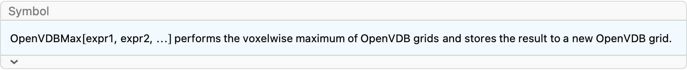
Create two level sets:
grid1 = OpenVDBLevelSet[Ball[], 0.01];
grid2 = OpenVDBLevelSet[Cuboid[{0, 0, 0}, {1.2, 1.2, 1}], 0.01];Perform a voxel‐wise max operation:
max = OpenVDBMax[grid1, grid2];OpenVDBLevelSetRender[max]The original grids are unchanged:
{grid1["IndexDimensions"], grid2["IndexDimensions"], max["IndexDimensions"]}{{205, 205, 205}, {126, 126, 105}, {226, 226, 205}}
Perform voxel‐wise maximum across more than two grids:
grid1 = OpenVDBLevelSet[Ball[], 0.01];
grid2 = OpenVDBLevelSet[Cuboid[], 0.01];
grid3 = OpenVDBLevelSet[CapsuleShape[{{0, 0, 0}, {0, 0, 1.6}}, 0.2], 0.01];max = OpenVDBMax[grid1, grid2, grid3];OpenVDBLevelSetRender[max]OpenVDBMax is idempotent:
grid1 = OpenVDBLevelSet[Ball[], 0.01];max = OpenVDBMax[grid1];Both grids represent the same object:
{grid1["ActiveVoxelCount"], max["ActiveVoxelCount"]}{753990, 753990}
OpenVDBMax works on any grid type other than mask:
grid1 = OpenVDBCreateGrid[1.0, "Boolean"];
OpenVDBSetValues[grid1, Position[DiskMatrix[10 {1, 1, 1}], 1], 1];grid2 = OpenVDBCreateGrid[1.0, "Boolean"];
OpenVDBSetValues[grid2, Position[ArrayPad[DiskMatrix[10 {1, 1, 1}], 5], 1], 1];max = OpenVDBMax[grid1, grid2];OpenVDBImage3D[max]?OpenVDBMinOfCreate two level sets:
grid1 = OpenVDBLevelSet[Ball[], 0.01];
grid2 = OpenVDBLevelSet[Cuboid[{0, 0, 0}, {1.2, 1.2, 1}], 0.01];Perform a voxel‐wise min operation and store in the first grid:
OpenVDBMinOf[grid1, grid2];OpenVDBLevelSetRender[grid1]Perform voxel‐wise minimum across more than two grids:
grid1 = OpenVDBLevelSet[Ball[], 0.01];
grid2 = OpenVDBLevelSet[Cuboid[], 0.01];
grid3 = OpenVDBLevelSet[CapsuleShape[{{0, 0, 0}, {0, 0, 1.6}}, 0.2], 0.01];OpenVDBMinOf[grid1, grid2, grid3];OpenVDBLevelSetRender[grid1]OpenVDBMinOf is idempotent:
grid1 = OpenVDBLevelSet[Ball[], 0.01];grid1["ActiveVoxelCount"]753990
The grid remains unchanged:
OpenVDBMinOf[grid1];grid1["ActiveVoxelCount"]753990
OpenVDBMinOf works on any grid type other than mask:
grid1 = OpenVDBCreateGrid[1.0, "Boolean"];
OpenVDBSetValues[grid1, Position[DiskMatrix[10 {1, 1, 1}], 1], 1];grid2 = OpenVDBCreateGrid[1.0, "Boolean"];
OpenVDBSetValues[grid2, Position[ArrayPad[DiskMatrix[10 {1, 1, 1}], 5], 1], 1];OpenVDBMinOf[grid1, grid2];OpenVDBImage3D[grid1]?OpenVDBMaxOfCreate two level sets:
grid1 = OpenVDBLevelSet[Ball[], 0.01];
grid2 = OpenVDBLevelSet[Cuboid[{0, 0, 0}, {1.2, 1.2, 1}], 0.01];Perform a voxel‐wise max operation and store in the first grid:
OpenVDBMaxOf[grid1, grid2];OpenVDBLevelSetRender[grid1]Perform voxel‐wise maximum across more than two grids:
grid1 = OpenVDBLevelSet[Ball[], 0.01];
grid2 = OpenVDBLevelSet[Cuboid[], 0.01];
grid3 = OpenVDBLevelSet[CapsuleShape[{{0, 0, 0}, {0, 0, 1.6}}, 0.2], 0.01];OpenVDBMaxOf[grid1, grid2, grid3];OpenVDBLevelSetRender[grid1]OpenVDBMaxOf is idempotent:
grid1 = OpenVDBLevelSet[Ball[], 0.01];grid1["ActiveVoxelCount"]753990
The grid remains unchanged:
OpenVDBMaxOf[grid1];grid1["ActiveVoxelCount"]753990
OpenVDBMaxOf works on any grid type other than mask:
grid1 = OpenVDBCreateGrid[1.0, "Boolean"];
OpenVDBSetValues[grid1, Position[DiskMatrix[10 {1, 1, 1}], 1], 1];grid2 = OpenVDBCreateGrid[1.0, "Boolean"];
OpenVDBSetValues[grid2, Position[ArrayPad[DiskMatrix[10 {1, 1, 1}], 5], 1], 1];OpenVDBMaxOf[grid1, grid2];OpenVDBImage3D[grid1]?OpenVDBFilterThe following examples will use this level set grid as the base input:
grid = OpenVDBLevelSet[ExampleData[{"Geometry3D", "Triceratops"}, "MeshRegion"], 0.1];Apply a Laplacian filter on a level set:
gridcopy = OpenVDBCopyGrid[grid];OpenVDBFilter[gridcopy, "Laplacian"];OpenVDBMesh /@ {grid, gridcopy}OpenVDBFilter modifies the input grid:
gridcopy = OpenVDBCopyGrid[grid];gridcopy["IndexBoundingBox"]{{-48, 35}, {-16, 15}, {-19, 21}}
The bounding box is different after applying a filter:
OpenVDBFilter[gridcopy, {"Mean", 2}];gridcopy["IndexBoundingBox"]{{-47, 34}, {-15, 15}, {-19, 20}}
Apply 6 iterations of a Laplacian filter on a level set:
gridcopy = OpenVDBCopyGrid[grid];OpenVDBFilter[gridcopy, "Laplacian", 6];OpenVDBMesh /@ {grid, gridcopy}Apply 2 iterations of different filters:
filters = {
"Laplacian",
"MeanCurvature",
"Gaussian",
"Mean",(* synonomous with {"Mean", 1} *)
{"Mean", 2},
{"Median", 2}
};grids = Table[
OpenVDBFilter[OpenVDBCopyGrid[grid], f, 2],
{f, filters}
];meshes = OpenVDBMesh /@ grids;basemesh = OpenVDBMesh[grid];Grid[{
Prepend[Show[#, MeshRegion[basemesh, BaseStyle -> Opacity[0.1]]] & /@ meshes, basemesh],
Text /@ Prepend[filters, "Base Grid"]
}]
?OpenVDBImage3DThe following examples will use these grids as base inputs:
grid = OpenVDBLevelSet[ExampleData[{"Geometry3D", "Triceratops"}, "MeshRegion"], 0.1, 1.0];fog = OpenVDBFogVolume[grid];Retrieve the Image3D representation of a fog volume:
OpenVDBImage3D[fog]Clip within specified bounds:
fog["IndexBoundingBox"]{{-45, 32}, {-12, 12}, {-16, 17}}
OpenVDBImage3D[fog, {{12, 32}, {-12, 12}, {-16, 17}}]
By default OpenVDBImage3D works in index
coordinates.
OpenVDBDefaultSpace[OpenVDBImage3D]"Index"
Specify a bounding box in world coordinates:
OpenVDBImage3D[fog, {{1.2, 3.2}, {-1.2, 1.2}, {-1.6, 1.7}} -> "World"]OpenVDBImage3D works on level sets, rescaling all values
to lie between 0 and 1:
OpenVDBImage3D[grid]MinMax[OpenVDBImage3D[grid]]{0., 0.996078}
OpenVDBImage3D works on Boolean, byte, and mask
grids.
Boolean grid:
bgrid = OpenVDBCreateGrid[1.0, "Boolean"];
OpenVDBSetValues[bgrid, Position[DiskMatrix[10 {1, 1, 1}], 1], 1];OpenVDBImage3D[bgrid]
Byte grid:
kernel = GaussianFilter[DiskMatrix[10 {1, 1, 1}], 1];btgrid = OpenVDBCreateGrid[1.0, "Byte"];
OpenVDBSetValues[btgrid, Position[kernel, _?Positive], Round[255 Select[Flatten[kernel], Positive]]];OpenVDBImage3D[btgrid]Mask grid:
mgrid = OpenVDBCreateGrid[1.0, "Mask"];
OpenVDBSetStates[mgrid, Position[DiskMatrix[10 {1, 1, 1}], 1], 1];OpenVDBImage3D[mgrid]For large datasets, the option "ScalingFactor" can
reduce overall size:
OpenVDBImage3D[fog] // ImageDimensions{78, 25, 34}
OpenVDBImage3D[fog, "ScalingFactor" -> 0.5] // ImageDimensions{39, 13, 17}
The "ScalingFactor" -> Automatic chooses a factor to
keep the total (dense) voxel count in the Image3D object under \(1.5\times 10^9\).
This data is small enough to not down sample:
OpenVDBImage3D[fog, "ScalingFactor" -> Automatic] // ImageDimensions{78, 25, 34}
Create a large dataset whose bounding box contains \(8\times 10^9\) voxels:
large = OpenVDBLevelSet[Ball[], 0.001];large["BoundingGridVoxelCount"]8060150125
With "ScalingFactor" -> Automatic, the total voxel
count is smaller:
dims = ImageDimensions[OpenVDBImage3D[large, "ScalingFactor" -> Automatic]]{1145, 1145, 1145}
Times @@ dims1501123625
Clear the large dataset:
large =.?OpenVDBDepthImageThe following examples will use these grids as base inputs:
grid = OpenVDBLevelSet[ExampleData[{"Geometry3D", "Triceratops"}, "MeshRegion"], 0.02, 1.0];fog = OpenVDBFogVolume[grid];Retrieve depth map of a fog volume:
OpenVDBDepthImage[fog]Clip within specified bounds:
fog["IndexBoundingBox"]{{-228, 164}, {-65, 64}, {-82, 90}}
OpenVDBDepthImage[fog, {{60, 160}, {-60, 60}, {-80, 85}}]By default OpenVDBDepthImage works in index
coordinates.
OpenVDBDefaultSpace[OpenVDBDepthImage]"Index"
Specify a bounding box in world coordinates:
OpenVDBDepthImage[fog, {{1.2, 3.2}, {-1.2, 1.2}, {-1.6, 1.7}} -> "World"]
Apply a gamma correction factor of 2:
OpenVDBDepthImage[fog, Automatic, 2]Apply a gamma correction factor of 2 and rescale the nonzero values to lie between 0.6 and 1.0:
OpenVDBDepthImage[fog, Automatic, 2, {0.6, 1}]OpenVDBDepthImage works on level sets, rescaling all
values to lie between 0 and 1:
OpenVDBDepthImage[grid]MinMax[OpenVDBDepthImage[grid]]{0., 1.}
OpenVDBDepthImage works on Boolean, byte, and mask
grids.
Boolean grid:
bgrid = OpenVDBCreateGrid[1.0, "Boolean"];
OpenVDBSetValues[bgrid, Position[DiskMatrix[10 {1, 1, 1}], 1], 1];OpenVDBDepthImage[bgrid]
Byte grid:
kernel = GaussianFilter[DiskMatrix[10 {1, 1, 1}], 1];btgrid = OpenVDBCreateGrid[1.0, "Byte"];
OpenVDBSetValues[btgrid, Position[kernel, _?Positive], Round[255 Select[Flatten[kernel], Positive]]];OpenVDBDepthImage[btgrid]Mask grid:
mgrid = OpenVDBCreateGrid[1.0, "Mask"];
OpenVDBSetStates[mgrid, Position[DiskMatrix[10 {1, 1, 1}], 1], 1];OpenVDBDepthImage[mgrid]?OpenVDBProjectionImageThe following examples will use these grids as base inputs:
grid = OpenVDBLevelSet[ExampleData[{"Geometry3D", "Triceratops"}, "MeshRegion"], 0.02, 1.0];fog = OpenVDBFogVolume[grid];Retrieve projection image of a fog volume:
OpenVDBProjectionImage[fog]Clip within specified bounds:
fog["IndexBoundingBox"]{{-228, 164}, {-65, 64}, {-82, 90}}
OpenVDBProjectionImage[fog, {{60, 160}, {-60, 60}, {-80, 85}}]
By default OpenVDBProjectionImage works in index
coordinates.
OpenVDBDefaultSpace[OpenVDBProjectionImage]"Index"
Specify a bounding box in world coordinates:
OpenVDBProjectionImage[fog, {{1.2, 3.2}, {-1.2, 1.2}, {-1.6, 1.7}} -> "World"]
OpenVDBProjectionImage works on level sets, projecting
the entire band:
OpenVDBProjectionImage[grid]OpenVDBProjectionImage works on Boolean, byte, and mask
grids.
Boolean grid:
bgrid = OpenVDBCreateGrid[1.0, "Boolean"];
OpenVDBSetValues[bgrid, Position[DiskMatrix[10 {1, 1, 1}], 1], 1];OpenVDBProjectionImage[bgrid]
Byte grid:
kernel = GaussianFilter[DiskMatrix[10 {1, 1, 1}], 1];btgrid = OpenVDBCreateGrid[1.0, "Byte"];
OpenVDBSetValues[btgrid, Position[kernel, _?Positive], Round[255 Select[Flatten[kernel], Positive]]];OpenVDBProjectionImage[btgrid]
Mask grid:
mgrid = OpenVDBCreateGrid[1.0, "Mask"];
OpenVDBSetStates[mgrid, Position[DiskMatrix[10 {1, 1, 1}], 1], 1];OpenVDBProjectionImage[mgrid]
?OpenVDBSliceImageThe following examples will use these grids as base inputs:
grid = OpenVDBLevelSet[ExampleData[{"Geometry3D", "Triceratops"}, "MeshRegion"], 0.02, 2.0];fog = OpenVDBFogVolume[grid];Retrieve depth map of a fog volume:
OpenVDBSliceImage[fog, 0]Slice at z = 0 and clip within specified xy bounds:
fog["IndexBoundingBox"]{{-228, 164}, {-65, 64}, {-82, 90}}
OpenVDBSliceImage[fog, 0, {{60, 160}, {-60, 60}}]By default OpenVDBSliceImage works in index
coordinates.
OpenVDBDefaultSpace[OpenVDBSliceImage]"Index"
Specify a bounding box in world coordinates:
OpenVDBSliceImage[fog, 0.0 -> "World", {{1.2, 3.2}, {-1.2, 1.2}}]
OpenVDBSliceImage works on level sets, rescaling all
values to lie between 0 and 1:
OpenVDBSliceImage[grid, 0]MinMax[OpenVDBSliceImage[grid, 0]]{0., 0.996078}
OpenVDBSliceImage works on Boolean, byte, and mask
grids.
Boolean grid:
bgrid = OpenVDBCreateGrid[1.0, "Boolean"];
OpenVDBSetValues[bgrid, Position[DiskMatrix[10 {1, 1, 1}], 1], 1];OpenVDBSliceImage[bgrid, 10]
Byte grid:
kernel = GaussianFilter[DiskMatrix[10 {1, 1, 1}], 1];btgrid = OpenVDBCreateGrid[1.0, "Byte"];
OpenVDBSetValues[btgrid, Position[kernel, _?Positive], Round[255 Select[Flatten[kernel], Positive]]];OpenVDBSliceImage[btgrid, 10]Mask grid:
mgrid = OpenVDBCreateGrid[1.0, "Mask"];
OpenVDBSetStates[mgrid, Position[DiskMatrix[10 {1, 1, 1}], 1], 1];OpenVDBSliceImage[mgrid, 10]?OpenVDBDynamicSliceImageThe following examples are static images of an interactive output. Reevaluate them to interact.
The following examples will use these grids as base inputs:
grid = OpenVDBLevelSet[ExampleData[{"Geometry3D", "Triceratops"}, "MeshRegion"], 0.02, 2.0];fog = OpenVDBFogVolume[grid];Dynamically slice through a fog volume:
OpenVDBDynamicSliceImage[fog]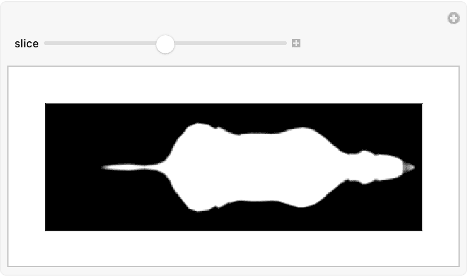
Dragging the mouse in the image selects a region to zoom into:
OpenVDBDynamicSliceImage[fog]The zoomed in region upon mouse release:
OpenVDBDynamicSliceImage[fog]Clicking anywhere in the image will zoom back out:
OpenVDBDynamicSliceImage[fog]Clicking in the margins allows for resizing:
OpenVDBDynamicSliceImage[fog]Dynamically slice through a level set, where all values are rescaled to lie between 0 and 1:
OpenVDBDynamicSliceImage[grid]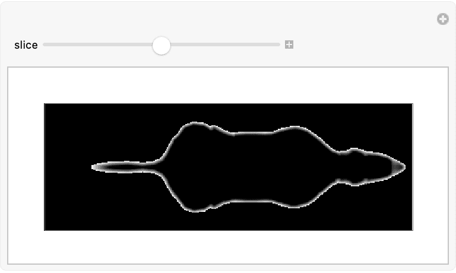
OpenVDBDynamicSliceImage works on Boolean, byte, and
mask grids.
Boolean grid:
bgrid = OpenVDBCreateGrid[1.0, "Boolean"];
OpenVDBSetValues[bgrid, Position[DiskMatrix[10 {1, 1, 1}], 1], 1];OpenVDBDynamicSliceImage[bgrid]Byte grid:
kernel = GaussianFilter[DiskMatrix[10 {1, 1, 1}], 1];btgrid = OpenVDBCreateGrid[1.0, "Byte"];
OpenVDBSetValues[btgrid, Position[kernel, _?Positive], Round[255 Select[Flatten[kernel], Positive]]];OpenVDBDynamicSliceImage[btgrid]Mask grid:
mgrid = OpenVDBCreateGrid[1.0, "Mask"];
OpenVDBSetStates[mgrid, Position[DiskMatrix[10 {1, 1, 1}], 1], 1];OpenVDBDynamicSliceImage[mgrid]
?OpenVDBDistanceFind the distance from a point to the boundary of the unit ball in world coordinates:
ball = OpenVDBLevelSet[Ball[], 0.01];OpenVDBDistance[ball, {3, 0, 0}]2.00006
OpenVDBDistance threads over multiple points:
OpenVDBDistance[ball, {{3, 0, 0}, {0, 2.5, 0}, {1.3, -1, 0.4}}]{2.00006, 1.50007, 0.688222}
The distance is unsigned and so the center of the ball has positive distance to the boundary:
OpenVDBDistance[ball, {0, 0, 0}]0.999963
By default OpenVDBDistance assumes points are in world
coordinates:
OpenVDBDefaultSpace[OpenVDBDistance]"World"
Pass in a point as an index coordinate. The distance is still returned in world space:
ball = OpenVDBLevelSet[Ball[], 0.01];Here, the index coordinate {300, 0, 0} is the same as
the world coordinate {3.0, 0.0, 0.0}:
OpenVDBDistance[ball, {300, 0, 0} -> "Index"]2.00006
?OpenVDBSignedDistanceFind the signed distance from a point to the boundary of the unit ball in world coordinates:
ball = OpenVDBLevelSet[Ball[], 0.01];OpenVDBSignedDistance[ball, {3, 0, 0}]2.00006
OpenVDBSignedDistance threads over multiple points:
OpenVDBSignedDistance[ball, {{3, 0, 0}, {0, 2.5, 0}, {1.3, -1, 0.4}}]{2.00006, 1.50007, 0.688222}
The distance is signed and so the center of the ball has negative distance to the boundary:
OpenVDBSignedDistance[ball, {0, 0, 0}]-0.999963
By default OpenVDBSignedDistance assumes points are in
world coordinates:
OpenVDBDefaultSpace[OpenVDBSignedDistance]"World"
Pass in a point as an index coordinate. The distance is still returned in world space:
ball = OpenVDBLevelSet[Ball[], 0.01];Here, the index coordinate {300, 0, 0} is the same as
the world coordinate {3.0, 0.0, 0.0}:
OpenVDBSignedDistance[ball, {300, 0, 0} -> "Index"]2.00006
?OpenVDBNearestFind the closest point on the boundary of the unit ball closest to a point in world coordinates:
ball = OpenVDBLevelSet[Ball[], 0.01];OpenVDBNearest[ball, {3, 0, 0}]{0.99995, -0.005, -0.005}
OpenVDBNearest threads over multiple points:
OpenVDBNearest[ball, {{3, 0, 0}, {0, 2.5, 0}, {1.3, -1, 0.4}}]{{0.99995, -0.005, -0.005}, {-0.005, 0.99995, -0.005}, {0.771213, -0.591578, 0.235}}
By default OpenVDBNearest assumes points are in world
coordinates:
OpenVDBDefaultSpace[OpenVDBNearest]"World"
Pass in a point as an index coordinate. The nearest point is still returned in world space:
ball = OpenVDBLevelSet[Ball[], 0.01];Here, the index coordinate {300, 0, 0} is the same as
the world coordinate {3.0, 0.0, 0.0}:
OpenVDBNearest[ball, {300, 0, 0} -> "Index"]{0.99995, -0.005, -0.005}
?OpenVDBMemberDetermine if a point lies in the unit ball or not:
ball = OpenVDBLevelSet[Ball[], 0.01];OpenVDBMember returns 1 if the point is inside the
region and 0 otherwise:
OpenVDBMember[ball, {3, 0, 0}]0
OpenVDBmember threads over multiple points:
OpenVDBMember[ball, {{3, 0, 0}, {0, 0, 0}, {1.3, -1, 0.4}}]{0, 1, 0}
By default OpenVDBMember assumes points are in world
coordinates:
OpenVDBDefaultSpace[OpenVDBMember]"World"
Pass in a point as an index coordinate:
ball = OpenVDBLevelSet[Ball[], 0.01];Here, the index coordinate {300, 0, 0} is the same as
the world coordinate {3.0, 0.0, 0.0}:
OpenVDBMember[ball, {300, 0, 0} -> "Index"]0
?OpenVDBFillWithBallsThe following examples will use this level set grid as the base input:
mesh = ExampleData[{"Geometry3D", "Triceratops"}, "MeshRegion"];grid = OpenVDBLevelSet[mesh, 0.01];Fill the grid with balls:
balls = OpenVDBFillWithBalls[grid, 20]{Ball[{-1.00919, -0.0268353, 0.470044}, 0.83733], Ball[{0.773351, 0.0232177, 0.313072}, 0.796918], Ball[{2.01556, -0.00181097, 0.561839}, 0.470206], Ball[{0.0293926, -0.0384966, 1.17062}, 0.340039], Ball[{-0.0773139, 0.486744, 0.805491}, 0.278327], Ball[{-2.13005, 0.0168609, 0.456068}, 0.277243], Ball[{-1.55613, 0.602449, -0.261292}, 0.27172], Ball[{-0.0145876, -0.535948, 0.771326}, 0.264356], Ball[{-1.50713, -0.68613, -0.359144}, 0.261304], Ball[{0.454163, 0.57152, -0.569954}, 0.246802], Ball[{1.70943, -0.379784, 1.10312}, 0.241353], Ball[{0.550185, -0.541509, -0.538848}, 0.2345], Ball[{-0.196868, 0.0812204, -0.213856}, 0.230036], Ball[{-1.65143, 0.82725, -0.852141}, 0.223974], Ball[{2.7123, -0.0343122, 0.0474559}, 0.22267], Ball[{-0.723783, -0.00531771, 1.49002}, 0.222041], Ball[{1.67713, 0.447553, 1.02029}, 0.215089], Ball[{-1.68856, -0.819582, -0.826577}, 0.212723], Ball[{-0.0946777, 0.531053, 0.315056}, 0.208753], Ball[{-0.0712329, -0.459107, 0.090024}, 0.200934]}
Show[
MeshRegion[mesh, BaseStyle -> Opacity[0.3]],
Graphics3D[{Red, Opacity[1], balls}]
]Restrict the radii to lie between 0.2 and 0.4 in world coordinates:
balls = OpenVDBFillWithBalls[grid, 20, {0.2, 0.4}]{Ball[{-1.00919, -0.0268353, 0.470044}, 0.4], Ball[{0.773351, 0.0232177, 0.313072}, 0.4], Ball[{-0.0835382, -0.0153026, 0.853562}, 0.4], Ball[{1.59609, -0.00745467, 0.714091}, 0.4], Ball[{-0.273902, 0.0262284, 0.022122}, 0.4], Ball[{-1.85805, -0.00571709, 0.521056}, 0.4], Ball[{-1.47445, -0.455557, -0.0221767}, 0.381804], Ball[{-0.868758, -0.04433, 1.2384}, 0.381278], Ball[{-1.38017, 0.423527, -0.0264647}, 0.366138], Ball[{0.626848, -0.46181, -0.314694}, 0.356633], Ball[{2.30442, 0.0357996, 0.376507}, 0.355544], Ball[{0.54862, 0.44484, -0.256626}, 0.334349], Ball[{0.625238, 0.0720034, 1.0285}, 0.332226], Ball[{-0.465397, 0.509542, 0.537133}, 0.312104], Ball[{0.152381, -0.472868, 0.305261}, 0.311758], Ball[{-0.472325, -0.499457, 0.524151}, 0.302903], Ball[{0.215345, 0.445606, 0.3286}, 0.300017], Ball[{-1.3, 0.369991, 0.929636}, 0.273247], Ball[{-1.42933, -0.462188, 0.763712}, 0.271606], Ball[{1.38767, 0.145444, 0.0995472}, 0.261759]}
Show[
MeshRegion[mesh, BaseStyle -> Opacity[0.3]],
Graphics3D[{Red, Opacity[1], balls}]
]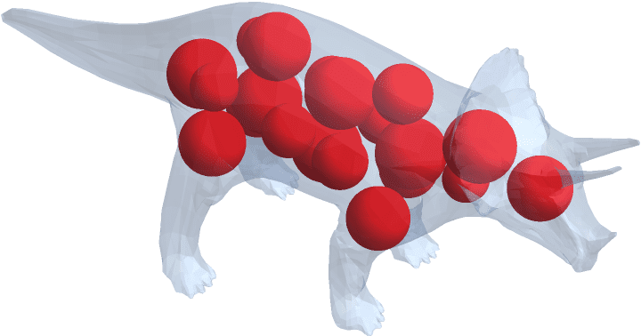
By default OpenVDBFillWithBalls assumes the input radii
are in world coordinates:
OpenVDBDefaultSpace[OpenVDBFillWithBalls]"World"
Pass in radii in index space. The balls are still returned in world space:
OpenVDBFillWithBalls[grid, 2, {20, 40} -> "Index"]{Ball[{-1.00919, -0.0268353, 0.470044}, 0.4], Ball[{0.773351, 0.0232177, 0.313072}, 0.4]}
OpenVDBFillWithBalls[grid, 2, {0.2, 0.4} -> "World"]{Ball[{-1.00919, -0.0268353, 0.470044}, 0.4], Ball[{0.773351, 0.0232177, 0.313072}, 0.4]}
OpenVDBFillWithBalls has the following options:
Options[OpenVDBFillWithBalls]{"IsoValue" -> Automatic, "Overlapping" -> False, "ReturnType" -> Automatic, "SeedCount" -> Automatic}
Allow the balls to overlap:
balls = OpenVDBFillWithBalls[grid, 20, "Overlapping" -> True];Graphics3D[balls]Increase the seed count to place balls more optimally:
Graphics3D[OpenVDBFillWithBalls[grid, 100]]Graphics3D[OpenVDBFillWithBalls[grid, 100, "SeedCount" -> 1000000]]Represent the balls as a packed array:
OpenVDBFillWithBalls[grid, 2]{"IsoValue" -> Automatic, "Overlapping" -> False, "ReturnType" -> Automatic, "SeedCount" -> Automatic}
OpenVDBFillWithBalls[grid, 2]{Ball[{-1.00919, -0.0268353, 0.470044}, 0.83733], Ball[{0.773351, 0.0232177, 0.313072}, 0.796918]}
OpenVDBFillWithBalls[grid, 2, "ReturnType" -> "PackedArray"]{{-1.00919, -0.0268353, 0.470044, 0.83733}, {0.773351, 0.0232177, 0.313072, 0.796918}}
?OpenVDBArea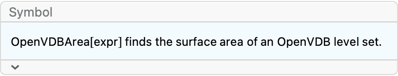
Find the area of the unit ball:
ball = OpenVDBLevelSet[Ball[], 0.01];OpenVDBArea[ball]12.5665
Compare to the exact value:
SurfaceArea[Ball[]] // N12.5664
By default OpenVDBArea returns a value in world
coordinates:
OpenVDBDefaultSpace[OpenVDBArea]"World"
Return an area in index coordinates:
ball = OpenVDBLevelSet[Ball[], 0.01];OpenVDBArea[ball, "Index"]125665
Since this grid has voxel size 0.01, the above value is roughly the world area divided by \(0.01^2\):
OpenVDBArea[ball]/0.01^2125665.
?OpenVDBVolumeFind the volume of the unit ball:
ball = OpenVDBLevelSet[Ball[], 0.01];OpenVDBVolume[ball]4.18908
Compare to the exact value:
Volume[Ball[]] // N4.18879
By default OpenVDBVolume returns a value in world
coordinates:
OpenVDBDefaultSpace[OpenVDBVolume]"World"
Return an area in index coordinates:
ball = OpenVDBLevelSet[Ball[], 0.01];OpenVDBVolume[ball, "Index"]4189075
Since this grid has voxel size 0.01, the above value is roughly the world area divided by \(0.01^3\):
OpenVDBVolume[ball]/0.01^34.18908*10^6
?OpenVDBEulerCharacteristicFind the Euler characteristic of a torus:
Torus = OpenVDBLevelSet[Torus[], 0.01];OpenVDBEulerCharacteristic[Torus]0
Compare to a mesh representation:
EulerCharacteristic[BoundaryDiscretizeGraphics[Torus[]]]0
?OpenVDBGenus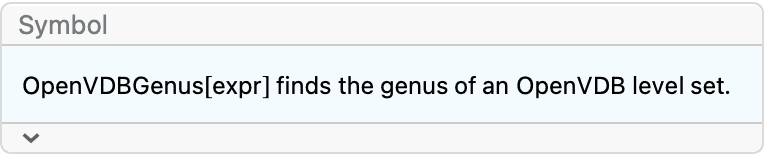
Find the genus of a torus:
Torus = OpenVDBLevelSet[Torus[], 0.01];OpenVDBGenus[Torus]1
Compare to a mesh representation:
PolyhedronGenus[BoundaryDiscretizeGraphics[Torus[]]]1
?OpenVDBResizeBandwidthCreate a level set with half width 3.0:
grid = OpenVDBLevelSet[Ball[], 0.1, 3.0];grid["HalfWidth"]3.
Resize the width to 2.0:
OpenVDBResizeBandwidth[grid, 2.0];grid["HalfWidth"]2.
By default OpenVDBResizeBandwidth works in index
coordinates:
grid = OpenVDBLevelSet[Ball[], 0.1, 3.0];OpenVDBResizeBandwidth[grid, 2.0];grid["HalfWidth"]2.
Resize the width to 0.4 by working in world space:
OpenVDBResizeBandwidth[grid, 0.4 -> "World"];Here, the width is expressed in index space:
grid["HalfWidth"]4.
?OpenVDBDilation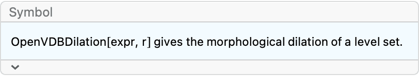
Create a level set:
grid = OpenVDBLevelSet[Torus[], 0.1];OpenVDBMesh[grid]Dilate by 0.2 units:
OpenVDBDilation[grid, 0.2];OpenVDBMesh[grid]By default OpenVDBDilation works in world space:
OpenVDBDefaultSpace[OpenVDBDilation]"World"
Dilate a grid by 2 voxels by working in index space:
grid = OpenVDBLevelSet[Torus[], 0.1];OpenVDBDilation[grid, 2 -> "Index"];OpenVDBMesh[grid]?OpenVDBErosionCreate a level set:
grid = OpenVDBLevelSet[Torus[], 0.1];OpenVDBMesh[grid]Erode by 0.1 units:
OpenVDBErosion[grid, 0.1];OpenVDBMesh[grid]By default OpenVDBErosion works in world space:
OpenVDBDefaultSpace[OpenVDBErosion]"World"
Erode a grid by 1 voxel by working in index space:
grid = OpenVDBLevelSet[Torus[], 0.1];OpenVDBErosion[grid, 1 -> "Index"];OpenVDBMesh[grid]?OpenVDBClosingCreate a level set:
grid = OpenVDBLevelSet[Torus[{0, 0, 0}, {0.2, 1}], 0.1];MeshRegion[OpenVDBMesh[grid], ViewPoint -> {0, 2, 2}]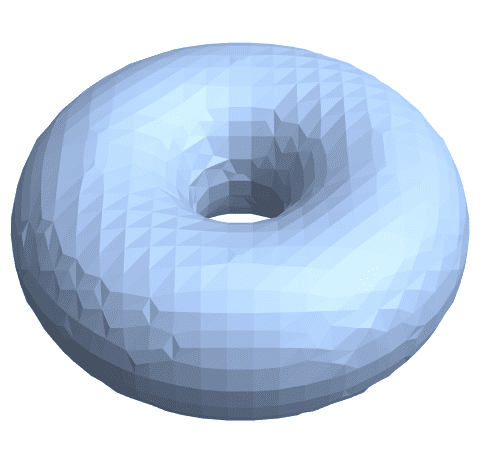
Fill in the hole by closing by 0.4 units:
OpenVDBClosing[grid, 0.4];MeshRegion[OpenVDBMesh[grid], ViewPoint -> {0, 2, 2}]By default OpenVDBClosing works in world space:
OpenVDBDefaultSpace[OpenVDBClosing]"World"
Close a grid by 4 voxels by working in index space:
grid = OpenVDBLevelSet[Torus[{0, 0, 0}, {0.2, 1}], 0.1];OpenVDBClosing[grid, 4 -> "Index"];MeshRegion[OpenVDBMesh[grid], ViewPoint -> {0, 2, 2}]?OpenVDBOpeningRepresent a cube as a level set:
grid = OpenVDBLevelSet[Cube[], 0.01];OpenVDBMesh[grid]Open by 0.1 units:
OpenVDBOpening[grid, 0.1];OpenVDBMesh[grid]Create a scene of random balls:
grid = OpenVDBLevelSet[RegionUnion @@ Table[Ball[RandomReal[{-1, 1}, 3], RandomReal[{0.1, 0.4}]], 20], 0.05];OpenVDBMesh[grid]
Delete small objects from the scene:
OpenVDBOpening[grid, 0.2];OpenVDBMesh[grid]By default OpenVDBOpening works in world space:
OpenVDBDefaultSpace[OpenVDBOpening]"World"
Open a grid by 10 voxels by working in index space:
grid = OpenVDBLevelSet[Cube[], 0.01];OpenVDBOpening[grid, 10 -> "Index"];OpenVDBMesh[grid]?OpenVDBTransformThe following examples will use this level set grid as the base input:
grid = OpenVDBLevelSet[ExampleData[{"Geometry3D", "Triceratops"}, "MeshRegion"], 0.01];Translate a grid by {2.0, 3.4, -1.0} in world
coordinates:
tgrid = OpenVDBTransform[grid, TranslationTransform[{2, 3.4, -1}]];Compare bounding boxes:
{grid["WorldBoundingBox"], tgrid["WorldBoundingBox"]} // Column
Scale a grid by a factor of 2.4:
tgrid = OpenVDBTransform[grid, ScalingTransform[{2.4, 2.4, 2.4}]];The bounding box of the resulting grid is roughly 2.4 times larger:
tgrid["WorldDimensions"]/grid["WorldDimensions"]{2.40302, 2.40977, 2.40456}
Rotate about the x axis, centered about the center of the bounding box:
tgrid = OpenVDBTransform[grid, RotationTransform[50 \[Degree], {1, 0, 0}, Mean /@ grid["WorldBoundingBox"]]];Compare bounding box of the resulting grid is roughly 2.4 times larger:
Show[
OpenVDBMesh[grid, "Adaptivity" -> 1],
MeshRegion[OpenVDBMesh[tgrid, "Adaptivity" -> 1], BaseStyle -> Red]
]The transformation can be any valid affine transform:
Compare objects:
Show[
MeshRegion[OpenVDBMesh[tgrid, "Adaptivity" -> 1], BaseStyle -> Red],
MeshRegion[OpenVDBMesh[grid, "Adaptivity" -> 1], BaseStyle -> Opacity[0.3]]
]The transformation can be any valid perspective transform:

Compare objects:
Show[
MeshRegion[OpenVDBMesh[tgrid, "Adaptivity" -> 1], BaseStyle -> Red],
MeshRegion[OpenVDBMesh[grid, "Adaptivity" -> 1], BaseStyle -> Opacity[0.3]]
]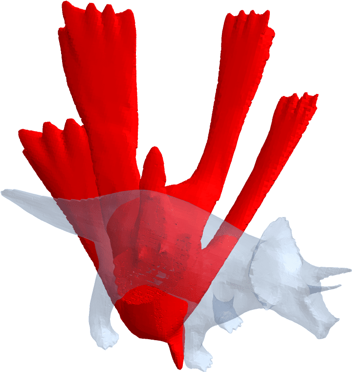
A list of 3 scalars is shorthand for translation in world coordinates:
tgrid = OpenVDBTransform[grid, {2, 3.4, -1}];Compare bounding boxes:
{grid["WorldBoundingBox"], tgrid["WorldBoundingBox"]} // ColumnA positive scalar is shorthand for isotropic scaling:
tgrid = OpenVDBTransform[grid, 2.4];The bounding box of the resulting grid is roughly 2.4 times larger:
tgrid["WorldDimensions"]/grid["WorldDimensions"]{2.40302, 2.40977, 2.40456}
OpenVDBTransform works on fog volumes:
fog = OpenVDBFogVolume[grid];tgrid = OpenVDBTransform[fog, 0.75];The bounding box of the resulting grid is roughly 0.75 times the input:
tgrid["WorldDimensions"]/grid["WorldDimensions"]{0.745592, 0.736842, 0.737892}
OpenVDBTransform turns all active tiles dense for fog
volumes:
Length[OpenVDBActiveTiles[fog]]17387
Length[OpenVDBActiveTiles[tgrid]]0
OpenVDBTransform works on all types:
bgrid = OpenVDBCreateGrid[1.0, "Boolean"];
OpenVDBSetValues[bgrid, Position[DiskMatrix[10 {1, 1, 1}], 1], 1];Apply an anisotropic scaling:
bgrid2 = OpenVDBTransform[bgrid, ScalingTransform[{2, 1, 0.5}]];OpenVDBImage3D[bgrid2]OpenVDBTransform creates a new grid:
grid["IndexDimensions"]{794, 266, 351}
tgrid = OpenVDBTransform[grid, 2.0];The original grid remains the same:
{grid["IndexDimensions"], tgrid["IndexDimensions"]}{{794, 266, 351}, {1589, 533, 703}}
By default OpenVDBTransform works in world
coordinates:
OpenVDBDefaultSpace[OpenVDBTransform]"World"
tgrid = OpenVDBTransform[grid, 2.0];The original grid remains the same:
{grid["IndexDimensions"], tgrid["IndexDimensions"]}{{794, 266, 351}, {1589, 533, 703}}
Use different resampling schemes
resamps = {"Nearest", "Linear", "Quadratic"};tgrids = OpenVDBTransform[grid, 2.0, Resampling -> #] & /@ resamps;For each resampling scheme, look at a piece of the narrow band at slice z = 0 and xy bounds {{-395, -365}, {70, 100}} (index coordinates):
slices = OpenVDBSlice[#, 0, {{-395, -365}, {70, 100}}] & /@ tgrids;MapThread[ListDensityPlot[#1, InterpolationOrder -> 0, PlotLabel -> #2] &, {slices, resamps}]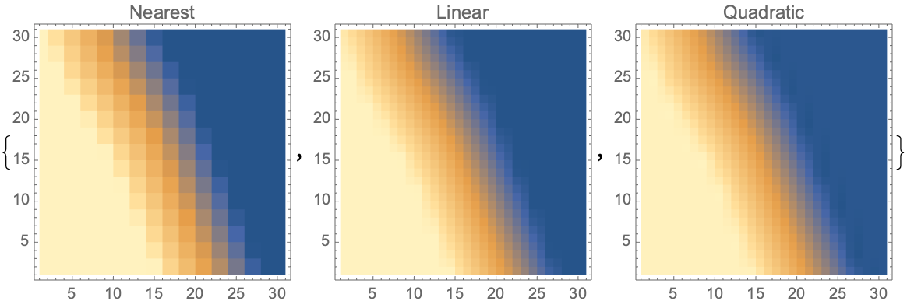
?OpenVDBMultiply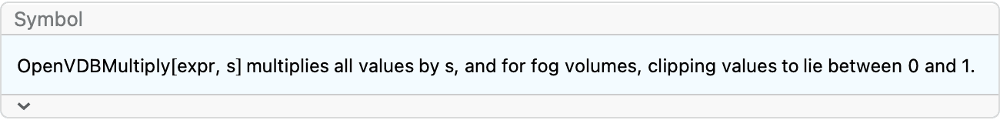
Create a fog volume with grayscale band width 3:
grid = OpenVDBLevelSet[Ball[], 0.1, 3.0];fog = OpenVDBFogVolume[grid];Image[OpenVDBSliceImage[fog, 0], ImageSize -> 240]Multiplying by 3 results in a grayscale band width of 1 for this grid:
OpenVDBMultiply[fog, 3.0];Image[OpenVDBSliceImage[fog, 0], ImageSize -> 240]OpenVDBMultiply only works on scalar grids:
grid = OpenVDBCreateGrid[1.0, "UInt32"];OpenVDBMultiply[grid, 2];?OpenVDBGammaAdjustCreate a fog volume:
grid = OpenVDBLevelSet[Ball[], 0.1, 3.0];fog = OpenVDBFogVolume[grid];Image[OpenVDBSliceImage[fog, 0], ImageSize -> 240]
Adjust with gamma correction factor 0.25:
OpenVDBGammaAdjust[fog, 0.25];Image[OpenVDBSliceImage[fog, 0], ImageSize -> 240]A very small gamma correction factor effectively turns all nonzero values to 1.0:
grid = OpenVDBLevelSet[Ball[], 0.1, 3.0];fog = OpenVDBFogVolume[grid];Image[OpenVDBSliceImage[fog, 0], ImageSize -> 240]
Adjust with gamma correction factor 0.25:
OpenVDBGammaAdjust[fog, 0.0001];Image[OpenVDBSliceImage[fog, 0], ImageSize -> 240]A very large gamma correction factor effectively turns all non-one values to 0.0:
grid = OpenVDBLevelSet[Ball[], 0.1, 3.0];fog = OpenVDBFogVolume[grid];Image[OpenVDBSliceImage[fog, 0], ImageSize -> 240]Adjust with gamma correction factor 0.25:
OpenVDBGammaAdjust[fog, 1000];Image[OpenVDBSliceImage[fog, 0], ImageSize -> 240]OpenVDBGammaAdjust only works on fog volumes:
grid = OpenVDBCreateGrid[1.0, "UInt32"];OpenVDBGammaAdjust[grid, 2];The unit test framework leverages Mathematica’s built in testing framework. In particular test results are returned as a collection of TestReportObjects that can be inspected.
Run all unit tests:
OpenVDBLink`Developer`TestOpenVDBLink[]Test just a particular area:
OpenVDBLink`Developer`TestOpenVDBLink["Measure"]To add a unit test, first convert the plaintext .wlt files into an interactive notebook:
OpenVDBLink`Developer`WLTToNotebook["Measure"]A notebook will open:
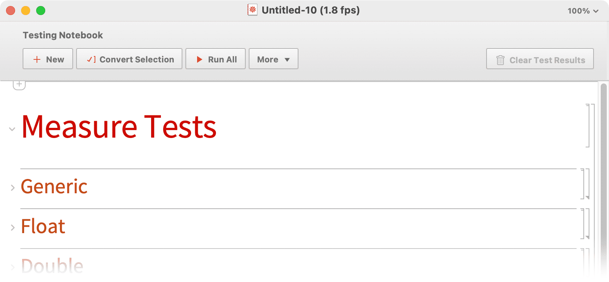
Insert your tests:
Save the notebook as .wlt, replacing the old file:
OpenVDBLink is built and compiled with a fork of LTemplate written by Szabolcs Horvát. Website: https://github.com/szhorvat/LTemplate
The structure of OpenVDBLink, as well as this documentation notebook & web version, is inspired by and uses tools from igraph/M also written by Szabolcs Horvát. Website: http://szhorvat.net/pelican/igraphm-a-mathematica-interface-for-igraph.html
The web version of the documentation is prepared with the M2MD package by Kuba Podkalicki. Website: https://github.com/kubaPod/M2MD/
OpenVDBLinkDeveloperWLTToNotebook is based
off the resource function WLTToNotebook by Sjoerd Smit and
Jon McLoone. Website: https://resources.wolframcloud.com/FunctionRepository/resources/WLTToNotebook/
OpenVDB is released under the Mozilla Public License Version 2.0, which is a free, open source, and detailed software license developed and maintained by the Mozilla Foundation. For more information about this license, see the Mozilla FAQ. The trademarks of any contributor to this project may not be used in association with the project without the contributor’s express permission.
Developers who wish to contribute code to be considered for inclusion in the OpenVDB distribution must first be authorized under a signed Contributor License Agreement. The signature and authorization process is managed via the Linux Foundation’s EasyCLA system, to handle the different CLAs depending on whether you are contributing on your own behalf or on behalf of your employer. The EasyCLA process will begin the first time you submit a PR to the project.
All code should adhere to the OpenVDB coding standards, and every commit must be signed off. That is, every commit log message must include a “Signed-off-by” line (generated, for example, with “git commit –signoff”), indicating that the contributor has the right to release it under the MPL 2.0 license. See http://developercertificate.org/ for more information on this requirement.